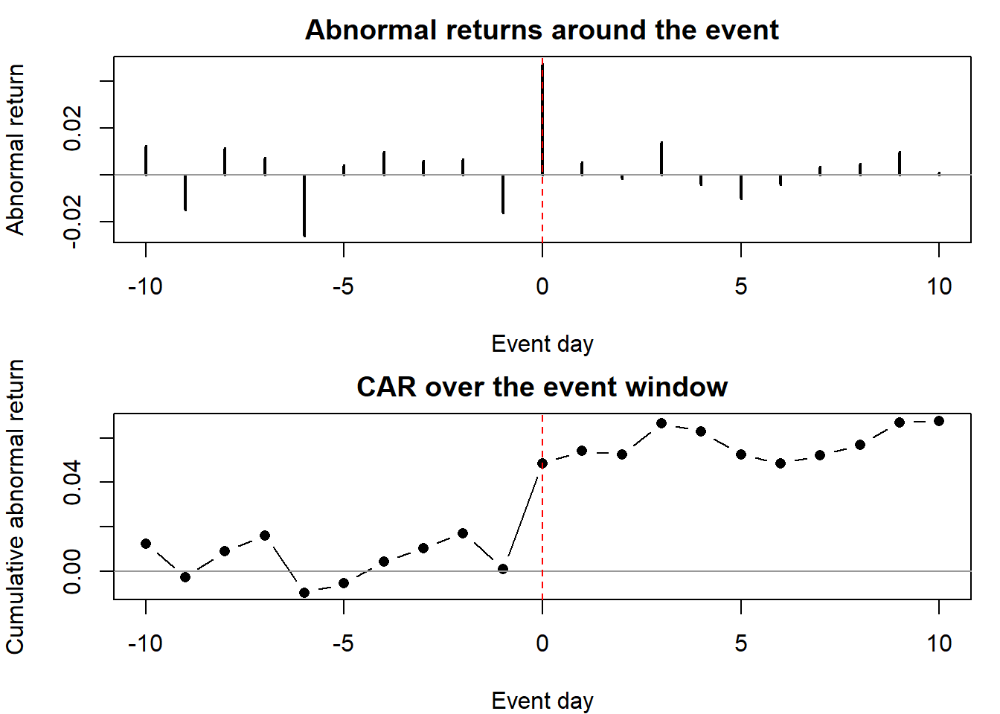

flowchart LR
A[Commercialization\nfirst sale] --> B[Introduction]
B --> C{{Takeoff}}
C --> D[Growth]
D --> E{{Slowdown}}
E --> F[Maturity]
F --> G[Decline]
41 Strategic Dynamic Models
Markets are not static cross-sections. A new product is launched, takes off, grows, slows, and matures; an advertising pulse decays over hours or quarters; a recall ripples through online chatter into sales and then into the firm’s stock price. This chapter is about modeling those dynamics—the time paths along which marketing actions translate into market and financial outcomes—and about the strategic questions that motivate them: when to enter a market, whether to cannibalize an installed base with a new technology, how much advertising carryover to expect, and what a marketing event is worth to shareholders. The unifying theme is that the quantity of managerial interest is rarely a single effect; it is a trajectory, and the trajectory’s shape is the object of inference.
The literature this chapter synthesizes is among the largest in empirical marketing, and it is methodologically eclectic by necessity. Diffusion of a durable good is a continuous univariate process best described by a differential equation; advertising response is a distributed-lag system; a market entry or a product recall is a punctuated event whose effect is identified against a counterfactual. We therefore move deliberately across estimators—nonlinear least squares, hazard models, autoregressive and vector-autoregressive systems, event studies, and difference-in-differences—and for each we state the model, its estimator, the assumptions that make its parameters interpretable, and the specific ways identification fails. Throughout, intuition leads and formalism follows immediately and in full.
The chapter is organized around the life cycle of a market and the firm’s strategic engagement with it. We open with market entry—the decision that starts every business strategy—and the empirical paradoxes surrounding pioneering. We then develop the diffusion of new products in depth, beginning with the Bass model and tracing its many generalizations. We treat takeoff and disruption as the turning points that managers most want to predict, advertising response as the canonical dynamic-effects problem, and marketing returns to firm value as the point where marketing dynamics meet financial markets. We close with the frontier topics of creativity and idea screening and quality measurement, where text and network methods have reshaped what is measurable. A reader who finishes the chapter should be able to specify, estimate, and critique a dynamic marketing model, and to articulate exactly what would have to be true for its causal claims to hold.
A word on epistemics before the models. Structural and dynamic modeling in marketing is not a search for a single correct specification; it is an argument about mechanism that must be interesting as well as correct (Erdem and Keane 1996). An assumption that is too strong is absurd; one that is too weak is uninteresting; the craft lies in the sweet spot that challenges what the audience already believes. The recurring pitfalls of empirical work in this area—selection on a biased (often survivorship-skewed) sample, omission of competition, and neglect of dynamics, heterogeneity, and endogeneity—are the failure modes against which every model below should be read. Marketing complexity compounds these: sales respond not to a single instrument but to an interacting mix, against competitive reactions, with delayed response, across territories and products, and toward multiple firm goals. The models in this chapter are disciplined attempts to hold some of that complexity fixed while learning about the rest.
A taxonomy of dynamic series and their estimators
It is useful to fix, at the outset, the correspondence between the nature of the series and the class of model it demands. Continuous series may be univariate (the classic Bass and functional-data-analysis diffusion models), multivariate unidirectional (functional regression, the Koyck and autoregressive distributed-lag models, ARIMA), or multivariate multidirectional (vector autoregression, VARX, panel VAR, and simultaneous-equation systems). Punctuated series split on whether the event itself is the dependent variable—calling for hazard, split-hazard, or bivariate-hazard models—or whether the event is an exogenous shock whose effect on an outcome series is the target, calling for event studies, synthetic control, and difference-in-differences. This taxonomy recurs as a navigational aid throughout the chapter.
41.1 Market Entry
Market entry is the decision that initiates a business strategy, and it is freighted with perennial conflicts: pioneer versus second mover versus late entrant, incumbent versus entrant. The payoff to playing it well is large, which makes the empirical record on pioneering advantage one of the most consequential—and most contested—findings in the field.
41.1.1 The Pioneering Paradox
The folklore holds that pioneers enjoy durable advantages. Several mechanisms rationalize this. On the consumer side, uncertainty about later entrants, stable preferences once formed, learning that makes the pioneer the category standard, an early claim on the most attractive positioning, and switching costs that lock in early adopters all favor the first mover. On the product side, barriers to entry accrue through economies of scale, learning-curve cost advantages, technological leadership, and preemption of scarce suppliers. Against these run countervailing disadvantages: free-riding late entrants who avoid the pioneer’s market-development costs, shifts in technology and customer needs that strand the pioneer’s investments, incumbent inertia, the late entrant’s freedom to position optimally once the pioneer has anchored a high-switching-cost segment, changing resource requirements, and chronic underinvestment.
The empirical correction to the folklore is sharp. Golder and Tellis (1993) show that earlier research had been built on selection-biased foundations: databases such as PIMS and ASSESSOR, and the business press, recorded survivors, and relied on single-informant self-reports prone to measurement error. Estimating pioneer outcomes from survivors mechanically inflates the apparent pioneer advantage. Using a prospective historical analysis drawn from contemporaneous public sources (BusinessWeek, Advertising Age, and the like) rather than a retrospective database, Golder and Tellis (1993) find that nearly half of market pioneers fail and that mean pioneer market share is far lower than earlier studies claimed. What does persist is an advantage for early market leaders—firms that enter, on average, roughly thirteen years after the first pioneers and then build durable leadership. The methodological lesson generalizes: source selection must be justified before the sample is drawn, against explicit criteria of competence, objectivity, reliability, and corroboration—while remaining alert that corroboration across sources can itself encode a shared confirmation bias. The study’s own limitations are instructive: it does not model the marketing mix, the customer-oriented definition of a product category is necessarily somewhat arbitrary, and residual survivorship uncertainty remains.
A market pioneer is not the firm that invents a product but the firm that is first to sell it in a category; the empirically durable advantage belongs not to this pioneer but to the early market leader who follows, learns, and invests.
The deeper question is why firms persist in suboptimal entry behavior. One explanation is fixation—an organizational fixation on the micro-hurdles and early breakthroughs that produced initial success, hardening into entrenchment, a myopic perfection of the original formula, and the bureaucratic baggage of routines that crowd out vision. A second is the simple high base-rate failure of new ideas. A third is a trend-projection or hot-hand bias that extrapolates early momentum. None of these is the single truth; the reviewer’s discipline is to demand, of any proposed explanation for an entry outcome, an argument for why it is better than the alternatives.
41.1.2 Entry Mode, Timing, and Country Context
When entry is into a foreign market, the firm’s decisions decompose into firm-level choices, country-level conditions, and the match between home and host. Johnson and Tellis (2008) study entry into China and India and report a set of findings that resist easy intuition: smaller firms succeed more often than larger ones, more open markets yield lower success rates, and success is greater for firms that enter earlier, exert greater control over their entry mode, and resemble the host country. India emerges as the tougher market.
The framework organizes the drivers along three axes. Firm differentiation turns first on entry mode—export, licensing and franchising, alliance, joint venture, wholly owned subsidiary—an ordering of increasing control over marketing resources on which two theories make opposite predictions. The resource-based view holds that greater control raises success by limiting resource leakage and securing complementary assets; transaction-cost reasoning holds that greater control raises the investment required to break even, and so depresses success. Entry timing trades the early entrant’s ability to lock up distribution, suppliers, standards, consumer preferences, and government incentives against the late entrant’s lower learning costs and the documented fragility of pioneer advantage (Golder and Tellis 1993). Firm resources, proxied by size, cut both ways: larger firms absorb negative periods and carry more product- and market-specific knowledge, while smaller firms carry less bureaucracy and, with it, greater innovative capacity (Chandy and Tellis 2000). Country differentiation turns on host-country openness—which raises demand and quality competition but also intensifies foreign rivalry and thins margins—and on country risk, political and financial-economic, which depresses success. Host–home location turns on cultural distance (closer is better) and economic distance (closer is better, through transferable market knowledge and infrastructural compatibility).
The measurement design illustrates how a small-sample (192 Chinese and 64 Indian entries) historical analysis can still be disciplined. Entry mode is scaled on a six-point instrument following Anderson and Gatignon (1986); firm size is year-end sales from Compustat and Mergent; economic distance follows Mitra and Golder (2002); cultural distance follows Kogut and Singh (1988)’s operationalization of Hofstede; openness is foreign direct investment over host GDP; and country risk follows the International Country Risk Guide (Erb, Harvey, and Viskanta 1996). Table 41.1 records the design. The same admissibility criteria as Golder and Tellis (1993)—competence, neutrality, reliability, corroboration, with the addition of contemporaneity—govern which sources enter the analysis.
| Variable | Measure | Source |
|---|---|---|
| Success | Degree-of-success numerical rating | Historical analysis (LexisNexis, ABI/INFORM) |
| Entry mode | Six-point control scale (Anderson and Gatignon 1986) | Archival |
| Entry timing | Liberalization baseline (China 1978, India 1991) | Archival |
| Firm size | Year-end sales of the focal firm | Compustat, Mergent Online |
| Economic distance | Index following (Mitra and Golder 2002) | IFS Yearbook |
| Cultural distance | Hofstede-based index following (Kogut and Singh 1988) | Hofstede |
| Openness | Foreign direct investment / host GDP | IMF |
| Country risk | International Country Risk Guide (Erb, Harvey, and Viskanta 1996) | ICRG |
41.1.3 Entry by Substitution: The Sharing Economy
Entry need not be a firm choosing a market; it can be an entire substitute business model entering an incumbent’s market. Zervas, Proserpio, and Byers (2017) study the entry of Airbnb against the Texas hotel industry and exploit a difference-in-differences identification strategy: the staggered, geographically uneven growth of Airbnb supply provides treatment variation against which hotel outcomes can be compared. Linking Airbnb’s review history (a proxy for realized stays) to monthly tax records for some 300 Texas hotels, they estimate that a 10% increase in Airbnb’s market share lowers hotel room revenue by roughly 0.39%, with the incidence concentrated among lower-priced hotels that do not cater to business travelers. The mechanism is not a collapse in occupancy but less aggressive room pricing: incumbents respond to the substitute by competing on price, and the revenue effect operates through that margin. The study cleanly separates a cumulative measure of impact from an instantaneous one, a distinction that recurs whenever a continuously growing treatment meets a punctuated-event mindset.
41.2 Product Adoption and Diffusion
Every new product, idea, technology, or brand either diffuses through a population or fails. The shape of that diffusion—and the social and economic processes generating it—is studied across demography, archaeology, geography, epidemiology, sociology, linguistics, physics, and cosmology; Bass (1969) brought it into marketing. Diffusion can be analyzed at the level of a product class, category, technology, or brand, and the classic models can be read as negative-exponential, Bass, functional-data-analysis, or network formulations. We build the theory from the Bass model outward, because nearly every later model is a generalization of it.
41.2.1 Definitions and the Diffusion Curve
A new product is not the same as an innovation, and “diffusion” itself carries two definitions. In economics it is “the spread of an innovation across social groups over time,” a phenomenon distinct from its drivers; in marketing it is “the communication of an innovation through the population,” collapsing phenomenon and driver. Chandrasekaran and Tellis (2007), whose comprehensive review anchors this section, adopt the economic reading: the spread is the object, communication is one candidate mechanism among several. Table 41.2 records the contrast.
| In economics | In marketing | |
|---|---|---|
| Diffusion | Spread of an innovation across social groups over time | Communication of an innovation through the population |
| Implication | Phenomenon \(\neq\) driver | Phenomenon \(=\) driver |
A product’s life cycle passes through identifiable stages: commercialization (first sale), introduction (the interval between commercialization and takeoff), takeoff (a dramatic and sustained sales increase), growth (takeoff to slowdown), slowdown (the onset of declining growth), and maturity (slowdown to decline). The empirical regularity that organizes the field is that cumulative sales over time trace an S-shaped curve. Figure 41.1 sketches this stage structure.
The review distills a set of generalizations about the Bass parameters that every applied modeler should carry. The coefficient of innovation or external influence, \(p\), has a mean between roughly 0.0007 and 0.03 (about 0.001 in developed and 0.0003 in developing countries). The coefficient of imitation or internal influence, \(q\), runs between about 0.38 and 0.53, is larger for industrial and medical innovations than for consumer durables, and is somewhat higher in developing than developed markets. Market potential, \(m\), is larger in developed than developing countries. These come with cautions: time to peak sales averages about sixteen years in developed and nineteen in developing markets, and—critically for estimation—static models such as the basic Bass model bias market potential and the innovation coefficient downward and the imitation coefficient upward. The drivers of diffusion span word of mouth, communication, macroeconomic conditions, marketing-mix variables (price, consumer heterogeneity, consumer learning), purchasing-power-adjusted per-capita income, and international trade. The turning points have their own regularities: takeoff occurs six to ten years after introduction and is driven by price decreases; slowdown brings a 15–32% sales decline driven by further price decline, market penetration, wealth, and information cascades (a fast takeoff portends a fast decline). Across stages, durations are themselves patterned—introduction six to ten years, growth eight to ten, early maturity about five—with time-saving products enjoying longer growth than non-time-saving ones and leisure-enhancing products shorter growth than the rest; introduction and early maturity have compressed over historical time while growth has not. Stage-by-stage growth rates trace the curve’s shape: roughly 31% in introduction, 428% at takeoff, 45% in growth, \(-15\%\) at slowdown, \(-25\%\) in early maturity, and 3.7% in late maturity.
41.2.2 The Bass Model
The intuition of Bass (1969) is that the timing of a consumer’s first purchase is correlated with the number of people who have already bought. The population splits into innovators, who adopt independently of others, and imitators (early adopters, the early and late majority), whose probability of adopting rises with the cumulative number of prior adopters; laggards bring up the rear. The model is built for a new class of infrequently purchased products—not new brands or new models of an existing product—and its foundational assumption is that the hazard of a first purchase is a linear function of cumulative adoption.
Formally, let \(F(t)\) be the cumulative fraction of the ultimate market that has adopted by time \(t\), \(f(t) = F'(t)\) the adoption density, \(Y(t) = m F(t)\) the cumulative number of adopters, and \(m\) the market potential (the number of initial purchases before any replacement). The conditional probability of adopting at \(t\) given no prior adoption—the hazard rate—is assumed linear in cumulative adoption, \[ P(t) = \frac{f(t)}{1 - F(t)} = p + \frac{q}{m}\, Y(t), \tag{41.1}\] where \(p\) is the probability of an initial purchase at \(t=0\) (the innovation coefficient) and \(\tfrac{q}{m} Y(t)\) is the adoption pressure that prior adopters exert on imitators. Multiplying through, the adoption density is \[ f(t) = \big(p + q\,F(t)\big)\big[1 - F(t)\big], \tag{41.2}\] and the instantaneous number of adoptions is the quadratic \[ S(t) = m f(t) = pm + (q - p)\,Y(t) - \frac{q}{m}\,Y^2(t). \tag{41.3}\] The quadratic in \(Y(t)\) is the engine of the S-shape: adoptions accelerate while the imitation term dominates and decelerate as the remaining market shrinks. Solving the separable differential equation \[ dt = \frac{dF}{\,p + (q - p)F - q F^2\,} \tag{41.4}\] with \(F(0)=0\) yields the closed-form cumulative curve \[ F(t) = \frac{1 - e^{-(p+q)t}}{\,1 + (q/p)\,e^{-(p+q)t}\,}, \tag{41.5}\] so that \(Y(t) = m F(t)\). The discrete-time estimating equation regresses current sales on lagged cumulative sales and its square, \[ S_t = a + b\,Y_{t-1} + c\,Y_{t-1}^2, \qquad t = 2, 3, \dots, \tag{41.6}\] where the structural parameters are recovered from the reduced-form coefficients via \(a = pm\), \(b = q - p\), \(c = -q/m\), and inverting, \[ p = \frac{a}{m}, \qquad q = -cm, \qquad m = \frac{-b \pm \sqrt{b^2 - 4ac}}{2c}. \tag{41.7}\]
The model’s strengths are its tight fit to the S-curve, courtesy of the quadratic term; its interpretable parameters (\(p\) as the spontaneous, externally driven rate of adoption, \(q\) as the contagion from prior adopters); and its clean managerial outputs. The timing and magnitude of peak sales follow in closed form, \[ t^{*} = \frac{1}{p+q}\,\ln\!\frac{q}{p}, \qquad S(t)^{*} = m\,\frac{(p+q)^2}{4q}. \tag{41.8}\] The model also nests its predecessors: with \(p=0\) it reduces to a logistic curve driven purely by imitation, and with \(q=0\) to a negative-exponential curve driven purely by innovation.
The limitations are equally important and largely structural. The model requires, for stable estimates, the very events one most wants to forecast—takeoff and slowdown—so that estimates remain unstable until the curve’s turning points are observed and shift as each new observation arrives. It does not directly admit marketing-mix variables; price and promotion enter only indirectly through \(m\) and \(p\). It treats the product definition as static, allowing no growth or change in the product itself. And the ordinary-least-squares implementation of Equation 41.6 carries three pathologies: severe multicollinearity between \(Y_{t-1}\) and \(Y_{t-1}^2\) that destabilizes the estimates, the absence of valid standard errors for the structural \(p\), \(q\), \(m\), and a time-interval bias from fitting a continuous model to discrete data. Defining the series is itself fraught: theory wants first adoptions as \(S_t\), but data typically commingle first purchases and repurchases; sales should begin at commercialization, but reporting usually starts only once a product already sells well; and there is no principled stopping rule.
Identification failures in the Bass model
The Bass model’s parameters are not well identified before the diffusion curve has revealed both turning points. Pre-peak data are consistent with many \((p, q, m)\) triples that trade off market potential against imitation speed, which is why estimates swing wildly as data accrue. The OLS estimating equation compounds this: \(Y_{t-1}\) and \(Y_{t-1}^2\) are nearly collinear over the early sample, inflating the variance of \(b\) and \(c\) and propagating—through Equation 41.7—into unstable, and sometimes economically absurd (negative \(m\)), structural estimates. Forecasting from a pre-takeoff Bass fit is therefore an exercise to be undertaken with explicit acknowledgment of this fragility.
41.2.3 Generalizing the Bass Model
The basic model’s limitations have generated a large family of extensions, each relaxing one assumption while retaining the contagion core.
Incorporating the marketing mix. Price acts on both market potential \(m\) and the adoption hazard \(P(t)\), with heterogeneous effects across products; advertising and distribution enter analogously, the latter through a two-stage process in which the number of adopting retailers sets the potential \(m\) facing consumers. The Generalized Bass Model of Bass, Krishnan, and Jain (1994) multiplies the hazard by a current-marketing- effort term, \[ \frac{f(t)}{1 - F(t)} = \big(p + q F(t)\big)\,x(t), \tag{41.9}\] with \[ x(t) = 1 + \beta_1 \frac{\Delta P(t)}{P(t-1)} + \beta_2 \frac{\Delta A(t)}{A(t-1)}, \tag{41.10}\] where \(\Delta P(t)\) and \(\Delta A(t)\) are the period-over-period changes in price and advertising. When price and advertising are constant, \(x(t) = 1\) and the model collapses to the basic Bass model—an attractive nesting—though the specification stops at two instruments rather than the full mix or the macro variables (income, for instance) that also move adoption.
Incorporating supply restrictions. When supply is constrained, an intermediate stage of waiting applicants sits between potential and realized adopters. Writing \(A(t)\) for waiting applicants and \(N(t)\) for adopters, the system is \[ \frac{dA(t)}{dt} = \Big[p + \frac{q_1}{m} A(t) + \frac{q_2}{m} N(t)\Big]\big[m - A(t) - N(t)\big] - c(t) A(t), \tag{41.11}\] \[ \frac{dN(t)}{dt} = c(t) A(t), \tag{41.12}\] where \(c(t)\) is the supply coefficient governing the conversion of applicants into adopters, so that the second equation isolates the impact of supply restriction on the adoption rate. The growth of new applicants is the sum, \[ \frac{dZ(t)}{dt} = \frac{dA(t)}{dt} + \frac{dN(t)}{dt} = \Big(p + \frac{q_1}{m}A(t) + \frac{q_2}{m}N(t)\Big)\big(m - A(t) - N(t)\big). \tag{41.13}\] Allowing waiting applicants to abandon their adoption decision after some delay is the extension of Ho, Savin, and Terwiesch (2002).
Incorporating competition. Modeling diffusion at the brand rather than the category level admits that brands diffuse at different rates and interact. A new brand may expand the category’s total potential \(m\)—through added promotion and variety—or compete within the existing potential, interfering with rivals’ diffusion; the outcome depends on order of entry and competitive intensity. The brand-level perspective is taken up in the supply-side modeling tradition (Dekimpe, Parker, and Sarvary 2000; Bulte and Lilien 2001; Bronnenberg and Mela 2004). Complementary effects arise where indirect network externalities link categories, producing asymmetric co-diffusion.
Incorporating technological generations. For successive generations of the same product, substitution links the curves. With \(r_2\) the introduction time of the next generation, \[ S_1(t) = m_1 F_1(t) - m_1 F_1(t) F_2(t - r_2), \tag{41.14}\] \[ S_2(t) = F_2(t - r_2)\big[m_2 + F_1(t) m_1\big], \tag{41.15}\] where \(S_i(t)\), \(F_i(t)\), and \(m_i\) are generation-\(i\) sales, adoption fraction, and potential. Leapfrogging—skipping a generation to buy the next—is admitted by Mahajan and Muller (1996).
Time-varying parameters. Market potential can be modeled as a function of time-varying exogenous and endogenous variables (Mahajan and Peterson 1978), and the imitation coefficient can itself vary over time (Easingwood, Mahajan, and Muller 1983). The nonuniform-influence form generalizes the hazard, \[ \frac{dF(t)}{dt} = \big[p + q F(t)^{\delta}\big]\big[1 - F(t)\big], \tag{41.16}\] where \(\delta = 1\) recovers the Bass model, \(\delta \in (0,1)\) encodes a high initial imitation coefficient, and \(\delta > 1\) encodes delayed influence and hence a lower, later peak. Recency matters too: more recent adopters can exert stronger influence on later ones (Sharma and Bhargava 1994).
Replacement and multi-unit purchases. Balasubramanian and Kamakura (1989) fold replacement and penetration growth into a single sales equation, \[ y(t) = \big[a + b X(t)\big]\big[\alpha\,\text{Pop}(t)\,P^{\beta}(t) - X(t)\big] + r(t) + e(t), \tag{41.17}\] where \(X(t)\) is units in use at the start of year \(t\) (dead units already replaced), \(r(t)\) the units needing replacement, \(P(t)\) a price index, \(\alpha\) the ultimate penetration at base price, \(\beta\) the price-change effect on ultimate penetration, and \(a\), \(b\) the innovation and imitation coefficients. Steffens (2003) models multiple-unit purchases by a single household, while trial-repeat structure and cross-country variation furnish further extensions.
A sober evaluation is warranted: every one of these extensions still rests on a single driving mechanism—the dispersion of knowledge through word of mouth.
41.2.4 Estimation and Alternative Diffusion Models
The OLS estimator of Equation 41.6 is a starting point, not a destination. Maximum likelihood avoids time-interval bias but underestimates standard errors (Schmittlein and Mahajan 1982). Nonlinear least squares (V. Srinivasan and Mason 1986) yields flexible, time-interval-bias-free estimates with valid standard errors but is data-hungry. Hierarchical Bayesian methods enable parameter updating and borrow strength across products, provided the troublesome notion of “similar” products is operationalized—as Bayus (1993) does with an explicit segmentation scheme. Adaptive stochastic techniques let parameters drift over time, as in the augmented Kalman filter of Xie et al. (1997), and genetic algorithms can locate global optima and reduce bias.
Alternative models challenge the contagion premise itself. On the side of alternative drivers, Golder and Tellis (1998) model affordability with a Cobb–Douglas sales function, \[ S = P^{\beta_1} \cdot I^{\beta_2} \cdot CS^{\beta_3} \cdot MP^{\beta_4} \cdot e^{\varepsilon}, \tag{41.18}\] where sales are a product of price \(P\), income \(I\), consumer sentiment \(CS\), and market presence \(MP\); Horsky (1990) combines price, income, and word of mouth in a single growth model. A large literature models heterogeneity in aggregate diffusion (Roberts and Urban 1988; Oren and Schwartz 1988; Chatterjee and Eliashberg 1990; Bemmaor 1984; Song and Chintagunta 2003; Sinha and Chandrashekaran 1992; Karshenas and Stoneman 1993), and a strategy literature models the supply side—entry, marketing mix, and location (Dekimpe, Parker, and Sarvary 2000; Bulte and Lilien 2001; Bronnenberg and Mela 2004). On the side of alternative phenomena, spatial diffusion distinguishes contagious, expansion, hierarchical, and relocation processes (Mahajan and Peterson 1979; Redmond 2003; Garber et al. 2004), and entertainment products typically follow exponential decay rather than S-shaped growth (Eliashberg and Sawhney 1994; Eliashberg et al. 2000; Elberse and Eliashberg 2003; Moe and Fader 2002; Lee, Boatwright, and Kamakura 2003).
The turning points have their own modeling traditions, developed further in Section 41.3. Takeoff, “the point of transition from the introduction stage to the growth stage” (Golder and Tellis 1997), has been operationalized as a threshold relative to category peers (Golder and Tellis 1997), as the first turning point of a fitted logistic curve, as the largest three-year sales increase, as an annual-percentage-change criterion (Agarwal and Bayus 2002), as a threshold adapted for international markets (Stremersch and Tellis 2004), and as a 10–20% penetration rule of thumb (Garber et al. 2004). Its drivers include price declines (Golder and Tellis 1997), firm entry that improves quality and infrastructure (Agarwal and Bayus 2002), and venturesome national culture (Tellis, Stremersch, and Yin 2003), and it is modeled with proportional (Golder and Tellis 1997) or log-logistic (Tellis, Stremersch, and Yin 2003) hazards—so far only on successful innovations. Slowdown, the transition from growth to maturity (Golder and Tellis 1997), is operationalized as the first of two consecutive post-takeoff years of below-peak sales (Golder and Tellis 2004) and explained by a dual-market split between early adopters and the early majority (Goldenberg, Libai, and Muller 2001), by negative informational cascades, and by affordability (Golder and Tellis 2004), using cellular-automata (Goldenberg, Libai, and Muller 2001) and hazard (Golder and Tellis 2004) models.
41.2.5 Functional and Long-Tail Diffusion
A productive modern move treats the entire penetration curve, not its parameters, as the unit of analysis. Sood, James, and Tellis (2009) apply functional data analysis: yearly cumulative penetration for each category becomes a function, smoothed from discrete observations with splines (and, where data are sparse, with other smoothness-inducing devices that allow two or three time points to suffice). Functional principal components, functional regression, and functional cluster analysis then exploit the curve’s shape and borrow information across products and countries. The augmented functional regression integrates information across categories and so outperforms parametric extrapolation models, with product-specific effects more predictive of penetration than country-specific ones; the framework forecasts the years to takeoff and the timing and level of peak marginal penetration. The pedagogical virtue of the paper—telling a story from a simple model to progressively richer ones to justify each improvement—is itself worth emulating; its limits are the absence of formal hypotheses and its use of only same-category curves to predict a new product.
Appel, Libai, and Muller (2019) overturn the universality of the S-curve in long-tail digital markets. Studying SourceForge open-source software (excluding inactive projects and those with fewer than 200 downloads, in a market with a Gini coefficient of 0.96), they find that only the most popular products trace the familiar S-shape; lower-popularity products follow an exponential-like decline from launch (a “slide”) or a combination of slide and bell (“S&B”). The prior literature’s pro-innovation bias—the correlation between success and the importance assigned to a new product in development research—had concealed these patterns. The proposed inception model adds a heightened, time-decaying external influence, \[ p(t) = p\,e^{\delta t}, \tag{41.19}\] capturing influences not mediated by prior adopters—marketing mix, social-media posts, recommendations, expert opinion, influencers—that are strong early and decay. Methodologically, the analysis scales each pattern to \((0,1)\) by dividing by total downloads, smooths with a Hodrick–Prescott filter, and classifies shapes with a peaks-and-troughs algorithm; the same patterns recur in smartphone-app downloads. The key relationship is that higher popularity is associated with a lower share of adoptions due to the inception effect, so that inception is typically necessary but not sufficient for popularity. The analogy to movies (exponential blockbuster decline) and to supermarkets (heavy investment, little social influence) fails because the product types and the popularity–shape mapping differ.
41.2.6 Marketing and Adoption Timing
When the outcome of interest is when an individual adopts rather than how a market diffuses, the natural object is the time to adoption. Prins and Verhoef (2007) study the effects of direct and mass marketing on the adoption timing of a new e-service among existing customers, using 25 months of data on roughly 6,000 customers of a Dutch telecom operator. Adoption timing is “the time between the introduction and the adoption of the new service” (Steenkamp and Gielens 2003), and switchers to a competitor’s service are treated as non-adopters—valid given the focus on the focal firm’s new service among existing customers. The findings are that advertising (including competitors’) shortens time to adoption and that mass marketing has a greater effect on loyal customers than direct marketing does. The design relies on a result of Donkers, Franses, and Verhoef (2003): absent stratification on the independent variables, oversampling rare events does not bias parameter estimates or standard errors in binary-choice models—a useful licence for studying infrequent adoption.
41.2.7 Adjacent Discussions
Two further studies sit naturally beside the diffusion literature. Tellis et al. (2020) find, in a large analysis of video advertising, that emotion outperforms information and that surprise and humor are effective yet underused, while explicit branding tends to hurt even as it is heavily deployed—with the caveat that the very rarity of these emotional tactics may be the source of their effectiveness, so that universal adoption could erode it. Chandrasekaran, Tellis, and James (2020) extend generational diffusion to the problem of disruptive technological change; we treat that model in detail in Section 41.3.5 because its central construct is cannibalization.
41.3 Takeoff and Disruption
We study takeoff in part because new products tend to either take off or die—we rarely observe protracted flat sales—so the managerial decision reduces to a bet on whether takeoff will occur. Modeling the hazard of takeoff (the conditional probability of taking off given survival to date) is therefore the natural framing, and the hazard function typically peaks several years after introduction, so credible inference requires waiting at least that long.
41.3.1 Disruptive Technologies
The disruption thesis holds that incumbents fail by staying too close to their current customers while neglecting future ones. For each industry, a performance trajectory tracks how a technology improves relative to what the market demands. A sustaining technology maintains the established rate of improvement on the dimensions incumbents already serve; a disruptive technology underperforms on those dimensions initially but overshoots a different, initially marginal segment and eventually invades the mainstream. The prescriptive response is a sequence of diagnostic questions—Is the technology disruptive or sustaining? What is its strategic significance? Where is its initial market?—and an organizational answer: house the disruptive technology in a separate unit insulated from the incumbent’s current-customer pressures.
41.3.2 Predicting Takeoff with Hazard Models
Golder and Tellis (1997) make the prediction of takeoff operational. The key insight is a threshold: if base sales are small, a large percentage increase is needed to take off, whereas if base sales are large, a small percentage increase suffices, so the takeoff threshold is itself a function of base sales. Takeoff is then “the first year in which an individual category’s growth rate relative to base sales crosses this threshold”—equivalently, “the point of transition from the introductory stage to the growth stage of the product life cycle.” Operationally, the threshold is a plot of the percentage sales increase relative to base sales that demarcates takeoff. With price, year of introduction, market penetration, and product-specific and economic controls as covariates, the analysis finds that price at takeoff is below price at introduction, that average time to takeoff is about six years, that penetration at takeoff is about 1.7%, and that products tend to take off around the salient price points of $1{,}000, $500, and $100.
The estimator is Cox’s proportional-hazards model, \[ h_i(t) = h(t; z_{it}) = h_0(t)\,\exp\!\big(z_{it}^{\top}\boldsymbol{\beta}\big), \tag{41.20}\] where \(h_0(t)\) is an unspecified baseline hazard, \(z_{it}\) are the (possibly time-varying) covariates, and \(\boldsymbol{\beta}\) is estimated by partial likelihood, leaving \(h_0(t)\) unparameterized. Two modeling choices deserve scrutiny: \(\boldsymbol{\beta}\) is constrained equal across all categories, and unobserved heterogeneity (a frailty term) is excluded on the grounds that each takeoff event is unique and non-repeated—defensible for non-repeated events but a constraint to flag. The samples comprise eleven classic consumer durables, ten recently introduced durables, and ten categories evaluated during review; performance is assessed by a \(U^2\) reduction-in-uncertainty measure and by forecasts made at introduction and one year ahead.
The proportional-hazards assumption and what breaks it
Equation 41.20 imposes that covariates scale the baseline hazard multiplicatively and proportionally over time: the hazard ratio between two products with covariate vectors \(z\) and \(z'\) is \(\exp\!\big((z - z')^{\top}\boldsymbol{\beta}\big)\), constant in \(t\). If a covariate’s effect grows or fades over the product life cycle—plausible for price as a category matures—the proportionality assumption fails and \(\hat{\boldsymbol{\beta}}\) is biased. Remedies include time-varying coefficients, stratified baselines, or the parametric (log-logistic) hazards used for international takeoff in Tellis, Stremersch, and Yin (2003). Pooling \(\boldsymbol{\beta}\) across heterogeneous categories, as in Golder and Tellis (1997), trades efficiency for a homogeneity assumption that should be tested rather than assumed.
41.3.3 The Incumbent’s Curse
Why do incumbents so often miss radical innovations? A radical product innovation is “a new product that incorporates a substantially different core technology and provides substantially higher customer benefits relative to previous products in the industry” (Chandy and Tellis 1998). Chandy and Tellis (2000) identify several reasons incumbents resist them. Perceived incentives run through prospect theory: incumbents stand to lose from cannibalizing their position while entrants stand to gain, so the two evaluate the same gamble differently. An organizational filter channels resources toward proven, revenue-generating tasks, and organizational routines make repetitive tasks efficient at the cost of flexibility. Incumbents do hold offsetting opportunities—market capabilities such as customer knowledge, an established franchise, and market power—and, when large, financial and technical capabilities. Because size and incumbency are positively correlated, the (bureaucratic) inertia theory predicts that radical ideas struggle to pass through a large firm’s filtering and screening, absent incentives to push them; yet large firms also command the resources to commercialize radical innovation.
The empirical record overturns the simple inertia story. Using a four-year historical analysis (one author and nine assistants) of consumer durables and office products with high unit sales, with radical innovations identified by significance within each category and rated for radicalness by three experts, Chandy and Tellis (2000) find data for 64 of 93 innovations. The categorical patterns show that large firms are more likely to be incumbents, that small firms were the more radical innovators before World War II while large firms have become the more radical innovators recently, and that U.S. innovators have historically come from non-incumbents and smaller firms but recently from large firms. The multivariate analysis confirms a reversal: historically larger organizations introduced fewer radical innovations, but in recent years the tendency is the opposite, and recent U.S. firms have produced more radical innovations than non-U.S. firms—differences the authors attribute to institutions and culture. Further analysis on the relevant population shows that, relative to their share of all firms, large firms account for a disproportionately high share of radical innovations, and that although incumbents are far outnumbered by non-incumbents in any product class, incumbents still account for about half of radical innovations—raising the question of whether incumbents can also be early entrants.
41.3.4 International and Global Takeoff
Takeoff is not culturally invariant. Tellis, Stremersch, and Yin (2003) study 137 products across 10 categories in 16 countries with a parametric hazard model and find that European takeoff (about six years after introduction) differs from the U.S. pattern, that time-to-takeoff varies by country and category, and that—perhaps surprisingly—there is little evidence that culture and economic factors explain inter-country differences in time-to-takeoff, though countries lower in uncertainty avoidance and higher in education adopt faster. The practical recommendation is a waterfall (sequential) rather than sprinkler strategy for international rollout. Chandrasekaran and Tellis (2008), studying 16 products in 31 countries with a parametric hazard model, report that the developed–developing economic distinction, product type (work versus fun), cultural clusters, and calendar time all affect takeoff time—and that takeoff times have shortened over historical time. The contrast with Tellis, Stremersch, and Yin (2003) on the role of economic factors is a live tension in the literature. Sood and Tellis (2011) develop methods to predict takeoff, and Zhang and Luo (2016) study restaurant survival using Yelp data—a hazard-modeling application to firm-level survival rather than category takeoff.
These takeoff studies sit within a broader stocktaking of innovation research. Hauser, Tellis, and Griffin (2006) organize the field into five streams: consumer response to innovation, organizations and innovation, market entry strategies, prescriptive techniques for product-development processes, and defense against market entry.
41.3.5 Cannibalization and Survival Under Disruption
When a successive technology arrives, both incumbents and entrants face a dilemma: the incumbent must decide whether to invest in the new technology, the old, or both, while the entrant must decide whether to target a niche or the mass market. The resolution turns on the relationship between the new and old technologies—a high rate of disengagement (cannibalization) versus a low rate (coexistence). Chandrasekaran, Tellis, and James (2020), whose paper was famously rejected five times before publication, model leapfrogging, cannibalization, and survival during disruptive technological change. Disruption occurs when the incumbent focuses on the old technology to the exclusion of the new; cannibalization is the extent to which the successive technology eats into the real or potential sales (or penetration) of the old technology through substitution, captured by a rate of disengagement \(F_{12}\) that admits partial substitution. The adopters of a successive technology partition into leapfroggers (who adopt the new but would never have adopted the old), switchers (who adopted the old and switch once the new arrives), opportunists (who waited for the old but end up with the new), and dual users (who use both).
Building on Norton and Bass (1987), the penetration of the two technologies is \[ S_1(t) = m_1 F_1(t)\big(1 - F_{12}(t - \tau_2 + 1)\big), \tag{41.21}\] \[ S_2(t) = F_2(t - \tau_2 + 1)\big(m_2 + m_1 F_1(t)\big), \tag{41.22}\] where \(S_i(t)\) is the penetration of technology \(i\) in period \(t\), \(m_1\) is the long-run potential of technology 1, \(m_1 + m_2\) the long-run potential of technology 2, and \(\tau_2\) the introduction time of technology 2. Each fraction takes the Bass form, \[ F_g(t) = \frac{p_g\big(1 - e^{-(p_g + q_g)t}\big)}{p_g + q_g\,e^{-(p_g + q_g)t}}, \qquad g \in \{1, 2\}, \tag{41.23}\] with technology-specific innovation and imitation coefficients \(p_g, q_g\) and separate disengagement coefficients \(p_{12}, q_{12}\) governing the rate \(F_{12}\) at which technology-1 customers abandon it for technology 2. The model’s contributions are to distinguish the adoption rate of technology 2 from the disengagement rate of technology 1 (\(F_2 \neq F_{12}\)), to allow \(p\) and \(q\) to vary across technologies, and to give \(F_{12}\) the same functional form as \(F_1\) and \(F_2\)—a choice that fits the data, reduces to prior models, and applies to both generational and technological diffusion.
Estimation is by nonlinear least squares, minimizing the joint residual sum of squares across both technologies, \[ \sum_{i=1}^{n}\Big(s_{i1} - m_1 F_1(t_i)\big(1 - F_{12}(t_i - \tau_2 + 1)\big)\Big)^2 + \sum_{i=1}^{n}\Big(s_{i2} - F_2(t_i - \tau_2 + 1)\big(m_2 + m_1 F_1(t_i)\big)\Big)^2. \tag{41.24}\] The adopter segments decompose the technology-2 sales and the cannibalized technology-1 sales, \[ S_2(t) = L_2(t) + DU_2(t) + SW_2(t) + O_2(t), \tag{41.25}\] \[ S_1(t) = L_1(t) - CAN_2(t) = L_1(t) - \big(SW_2(t) + O_2(t)\big), \tag{41.26}\] where \(L\) denotes leapfroggers, \(DU\) dual users, \(SW\) switchers, \(O\) opportunists, and \(CAN\) cannibalization. Market growth is the sum of leapfroggers and dual users; cannibalization is the sum of switchers and opportunists. The managerial value is in distinguishing growth that adds to total demand from substitution that merely reallocates it.
41.4 Advertising Response
How consumers respond to advertising is the canonical dynamic-effects problem in marketing. The questions are deceptively simple—does advertising work, and if so when, where, why, and for how long?—and the answers require modeling effects that persist beyond the exposure period. Advertising exposure can produce a short (current) effect, a sleeper effect that emerges with delay, hysteresis (a persistent shift in baseline), a long-run effect, and an instant effect. The empirical challenge is to separate these, which means modeling carryover.
41.4.1 From Static Response to the Koyck Model
The naive model regresses sales on contemporaneous advertising, \[ S_t = \alpha + \beta A_t + \mu_t, \tag{41.27}\] and fails precisely because it ignores carryover. The natural correction is an infinite geometric distributed lag, \[ S_t = \alpha + \beta A_t + \beta \lambda A_{t-1} + \beta \lambda^2 A_{t-2} + \cdots + \epsilon_t, \tag{41.28}\] a moving average with geometrically declining weights that captures carryover exactly, with \(0 < \lambda < 1\) the decay rate. The Koyck transformation (Koyck 1954) makes this estimable: lag Equation 41.28 one period, multiply by \(\lambda\), and subtract, \[ \begin{aligned} \lambda S_{t-1} &= \alpha\lambda + \beta\lambda A_{t-1} + \beta\lambda^2 A_{t-2} + \cdots + \lambda\epsilon_{t-1}, \\ S_t - \lambda S_{t-1} &= \alpha(1 - \lambda) + \beta A_t + (\epsilon_t - \lambda\epsilon_{t-1}), \\ S_t &= \alpha(1-\lambda) + \lambda S_{t-1} + \beta A_t + u_t, \end{aligned} \tag{41.29}\] collapsing an infinite lag into a one-period autoregression that is easy to estimate. The parameters are interpretable: \(\beta\) is the current effect of advertising, \(\lambda\) the carryover or decay rate, \(\beta\lambda/(1-\lambda)\) the carryover effect, \(\beta/(1-\lambda)\) the total effect, and the \(p\%\) duration interval—the time to accumulate fraction \(p\) of the total effect—is \(\log(1-p)/\log\lambda\). Adding a lagged advertising term, \[ S_t = \alpha + \lambda S_{t-1} + \beta A_t + \beta_1 A_{t-1} + \mu_t, \tag{41.30}\] separates inertia from advertising carryover, disentangles decay across regressors, and identifies the shape of decay.
Clarke (1976) exposes the model’s central vulnerability, aggregation bias: the larger the data interval, the larger the estimated \(\lambda\), the larger the estimated carryover, and the longer the estimated duration of advertising effects. The once-conventional remedy—match the data interval to the interpurchase time—was overturned by Tellis and Franses (2006), who shows the optimal interval is the unit exposure time: the smallest interval within which advertising occurs only once and at the same time each period.
41.4.2 Autoregressive Distributed Lags and Their Limits
Generalizing the Koyck model yields the autoregressive distributed-lag (ADL) model—a precursor to vector autoregression— \[ S_t = \alpha + \lambda_1 S_{t-1} + \lambda_2 S_{t-2} + \cdots + \beta_0 A_t + \beta_1 A_{t-1} + \cdots + \mu_t, \tag{41.31}\] which accommodates a rich variety of decay shapes: the \(\beta\) coefficients govern the number and position of “bumps” in the response, while the \(\lambda\) coefficients govern the speed of decay. Its costs are also instructive. Aggregate, population-level data cannot identify exposure, aggregate time cannot identify the treated period, advertising budgets are set on expected sales (reverse causality), and the lagged regressors are multicollinear. These limits motivate the two major advances in advertising-response modeling: moving to disaggregate data—individual household or consumer, by day or hour, moment to moment, and in exposures rather than dollars—and moving to quasi-experiments such as difference-in-differences and synthetic control.
41.4.3 Direct-Response Advertising and Transfer Functions
Tellis, Chandy, and Thaivanich (2000) study television advertising for a service whose response is a referral—“a call by a customer for the firm’s service.” The theory of message repetition posits a current effect on behavior, a carryover effect on behavior, and a non-behavioral effect on attitude and memory; the research questions ask how advertising affects referrals given current brand equity—through placement, creative, time period, and ad age and repetition—and whether its marginal benefit exceeds its marginal cost. The model regresses referrals on their own lags and on lagged advertising, \[ R_t = \alpha + \gamma_1 R_{t-1} + \gamma_2 R_{t-2} + \gamma_3 R_{t-3} + \beta_0 A_t + \beta_1 A_{t-1} + \beta_2 A_{t-2} + \cdots + \epsilon_t, \tag{41.32}\] with controls for opening hours and time of day. The lagged dependent variables serve two purposes: algebraically, without them the independent-variable lag would be infinite; intuitively, they separate advertising carryover from inertia.
The estimation is a transfer-function (Box–Jenkins) analysis. Autocorrelation and partial-autocorrelation functions reveal hourly and weekly temporal patterns; the lag structure settles on three lags of the dependent and four of advertising. Writing the model with stationary \(R_t\) and \(A_t\), \[ R_t = \alpha + v(\mathbf{B}) A_t + N_t, \tag{41.33}\] where \(v(\mathbf{B}) = C\,w(\mathbf{B})\mathbf{B}^{b}/\delta(\mathbf{B})\) is the transfer function of advertising on referrals and \(N_t = [\theta(\mathbf{B})/\phi(\mathbf{B})] (1-\mathbf{B})^{d} a_t\) with \(a_t \sim N(0, \sigma^2)\) models the noise. The total effect of advertising is the sum of advertising coefficients divided by one minus the sum of lagged-referral coefficients, \[ \text{Total Effect} = \frac{\sum_{l=0}^{n} \beta_l}{1 - \sum_{j=1}^{p} \lambda_j}, \tag{41.34}\] and the partial advertising effect at each lag is the recursion \[ TA_{t-l} = \beta_l A_{t-l} + \sum_{j=0}^{l} \lambda_j\,TA_{t-l+j}. \tag{41.35}\] The results are managerially crisp: advertising effects dissipate after about eight hours, effectiveness varies by station, and creatives differ.
41.4.4 The Optimal Data Interval
Tellis and Franses (2006) is a seminal treatment of a question that lurks beneath every dynamic advertising model: at what temporal granularity should the data be recorded? The counterintuitive answer is that too disaggregate does not cause bias—the optimal interval is the unit exposure time, not the interpurchase time—and that the true parameters depend on the unit exposure time rather than on any assumed advertising process. The result generalizes beyond advertising; the same logic governs the optimal interval for estimating, say, an announcement’s effect on stock performance. Table 41.3 fixes the vocabulary.
| Term | Definition |
|---|---|
| Data interval | Temporal level of the records |
| Interpurchase time | Smallest calendar time between any two consumer purchases |
| Duration interval | Length of time over which an advertising effect lasts |
| Calendar time | Discrete time period |
| Exposure time | Moment a pulse of advertising first hits a consumer |
| \(p\%\) duration interval | Time accounting for \(p\%\) of the advertising effect |
| Current effect | Portion of the total effect occurring in the exposure period |
| Duration-interval bias | Carryover at the true interval minus carryover on aggregate data |
The optimal interval balances storage cost against estimator unbiasedness. At the true micro-data interval, the Koyck model is \[ s_t = \mu + \beta a_t + \beta\lambda a_{t-1} + \beta\lambda^2 a_{t-2} + \cdots + \epsilon_t, \qquad \epsilon_t \sim N(0, \sigma^2_\epsilon), \tag{41.36}\] with \(\beta\) the current effect, \(\beta/(1-\lambda)\) the carryover, and \(\lambda\) determining the duration interval. Applying the Koyck transformation (multiplying by \(1 - \lambda L\) for lag operator \(L\), \(L^k y_t = y_{t-k}\)), \[ s_t = \lambda s_{t-1} + \beta a_t + \epsilon_t - \lambda \epsilon_{t-1}. \tag{41.37}\] Aggregating \(K\) consecutive periods sampled at the current period defines \[ S_T = (1 + L + L^2 + \cdots + L^{K-1}) s_t, \tag{41.38}\] and analogously \(A_T\), \(\epsilon_T\), and \(S_{T-1} = (1 + L + \cdots + L^{K-1}) s_{t-K}\). The true aggregate form of the micromodel is \[ \begin{aligned} S_T = {}& \lambda^{K} S_{T-1} + \beta A_T \\ & + \beta\lambda\,(1 + \lambda L + \cdots + \lambda^{K-1} L^{K-1})(1 + L + \cdots + L^{K-1}) a_{t-1} + \epsilon_T - \lambda^{K} \epsilon_{T-1}. \end{aligned} \tag{41.39}\] The bias arises because aggregation loses the cross term, that is, \[ A_{T-1} \neq (1 + \lambda L + \cdots + \lambda^{K-1} L^{K-1})(1 + L + \cdots + L^{K-1}) a_{t-1}. \tag{41.40}\] With the optimal interval—one exposure pulse per interval—the carryover effect is recovered as \((\beta_1 + \beta_2)/(1 - \lambda^{K})\), the true duration interval as \(\sqrt[K]{\hat{\lambda}^{K}}\), and the current effect as \(\beta\); with data more disaggregate than the optimal interval, the formulas adjust to recover the same true effects.
41.4.5 Pulsing and Advertising Avoidance
Teixeira, Wedel, and Pieters (2010) study how advertising’s temporal pattern within a commercial affects consumers’ tendency to avoid it. Using eye-tracking data on 31 commercials viewed by roughly 2,000 participants, estimated with a probit model via MCMC, they develop a new metric for attention dispersion from gaze data. The optimization problem—minimize avoidance subject to a target level of brand activity—has pulsing as its solution: concentrating brand presence in bursts reduces avoidance relative to a constant presence.
41.4.6 Advertising Elasticity: Meta-Analysis
Synthesizing 56 studies spanning 1960–2008, Sethuraman, Tellis, and Briesch (2011) estimate an average short-term advertising elasticity of about 0.12 and a long-term elasticity of about 0.24, with a documented decline in advertising elasticity over historical time. Elasticity is higher for durable than nondurable goods, in the early than the mature life-cycle stage, with yearly than quarterly data, and when advertising is measured in gross rating points rather than monetary terms. These benchmarks discipline any single study’s estimate.
41.4.7 Television, Online Behavior, and Quasi-Experiments
The disaggregate-data and quasi-experimental advances are vividly illustrated by studies linking television advertising to online behavior. Liaukonyte, Teixeira, and Wilbur (2015) merge $3.4 billion of advertising spending by 20 brands with second-by-second traffic and transaction data for 1,224 commercials, using human coders for impression merging. Their difference-in-differences design compares two-minute pre/post windows—close to a regression-discontinuity logic—and finds that action-focused content raises direct website traffic and sales conditional on a visit; information- and emotion-focused content reduces traffic but raises purchases, with a positive net sales effect for most brands; and imagery-focused content decreases direct traffic. The behavioral model is sequential: after the ad, the consumer first decides whether to visit the website, then whether to buy. The data combine comScore Media Metrix online traffic (direct traffic, search-engine referrals, transaction counts) with Kantar Media ad data. The identification argument against endogeneity is that brands cannot control the exact second their ad airs—it is placed within a 15-minute window while the design examines a 4-minute window—and for the two-hour analysis a difference-in-differences design uses the largest non-advertising brand within each category as a control.
Tirunillai and Tellis (2017) examine television advertising’s effect on online chatter using synthetic control. The raw metrics come from reviews (Amazon, Epinions, CNET, Twitter, YouTube, Facebook—volume, valence, and entropy-based polarity) and from blogs (via Spinn3r—volume, the in-degree of the brand website, the in-degree of blog posts, and the volume of blogs gaining or losing rank). A dynamic factor model extracts latent dimensions, \[ Y_t = \boldsymbol{\xi} f_t + \epsilon_t, \qquad f_t = \boldsymbol{\Psi} f_{t-1} + \eta_t, \tag{41.41}\] where \(Y_t\) is the raw vector of review and blog measures, \(f_t\) the latent factors, \(\boldsymbol{\xi}\) the loadings, \(\epsilon_t\) idiosyncratic error, and \(\eta_t\) white noise with \(\mathbb{E}[\epsilon_t \eta'_{t-k}] = 0\). The factors resolve into content-based dimensions—popularity (loading on review and blog volume) and negativity (loading on valence and polarity)—and information-spread dimensions— visibility (blog volume and brand-website in-degree) and virality (blogs gaining rank and blog in-degree). Television advertising causally produces a short positive effect on chatter, larger on information spread than on content, and reduces negativity in the short run—working by stimulating conversation, triggering brand recall, framing the interpretation of experience favorably, and lending credibility that refutes negatives. The empirical setting is a “Let’s Do Amazing” campaign with a 70-day pre-window and 20-day post-window (the asymmetric window is not strongly justified), the synthetic brand is constructed to net out within-industry spillover (which the authors argue is absent), YouTube viewership is controlled with Visible Measures and TV viewership with Nielsen and other ratings, and a vector-autoregression complements the synthetic-control design to examine short- and long-run dynamics.
41.5 Marketing Returns to Firm Value
The terminal link in the dynamic chain runs from marketing actions, through consumer and competitive response, to the firm’s financial value. Establishing that link requires the apparatus of event analysis and a clear-eyed view of which designs support causal claims about returns.
41.5.1 A Ladder of Causal Inference
It helps to order the available designs by the rigor of causal inference they support. In decreasing order: lab experiment, field experiment, natural experiment, instrumental variables, Granger causality (improved by exogenous shocks), time-series regression (likewise improved by shocks), and cross-sectional regression. The same ordering appears as a ladder of field tests of causality—from bare correlation, to multiple regression that controls for plausible alternative causes, to time-series models using current and past values (Koyck, ADL, ARIMA), to first differences (effects of changes), to lags of first differences in the Arellano and Bond (1991) spirit, to Granger causality using only past values of the independent variables while controlling for past values of the dependent variable (preferably a VAR in differences), to intervention or event analysis, to natural experiments, and finally to randomized controlled trials. Figure 41.2 depicts the ascent.
flowchart BT
A[Cross-sectional regression] --> B[Time-series regression]
B --> C[Granger causality]
C --> D[First differences / Arellano-Bond]
D --> E[Event / intervention analysis]
E --> F[Natural experiment: DiD, synthetic control]
F --> G[Field experiment]
G --> H[Randomized controlled trial]
The financial logic rests on the efficient-market idealization in which a stock price \(P_t\) follows a random walk, so that the return \(P_t - P_{t-1}\) is white noise and any abnormal return signals new information. A typical two-stage panel design samples similar firms \(j\), identifies each firm’s similar events, estimates the abnormal returns \(e_{jt}\) associated with each event in a first stage (using WRDS data), and in a second stage pools those abnormal returns to estimate the factors that shift their distribution. The strength of an event analysis increases with a clearly defined event, a narrow treatment window, the removal of confounding events, a long pre-event baseline, a large and diverse set of firms and treatment contexts, and the extraction of known predictors’ effects—because it simulates a natural experiment around a natural or artificial shock. Natural experiments themselves come in flavors: treated-versus-untreated comparisons, before-versus-after comparisons, difference-in-differences, and synthetic control; pre-period controls range from a single prior period, to a baseline of prior periods, to a synthetic control, to a function of known factors (the Fama–French factors), to crossover designs in which the treated unit later becomes the control. Table 41.4 lists the archival sources that make such designs feasible in marketing.
| Event | Source |
|---|---|
| Market entry | Factiva, LexisNexis |
| New product | Factiva, Thomson Reuters |
| Customer satisfaction | ACSI |
| Innovation activities | Factiva, Capital IQ |
| Acquisitions | Factiva, SDC Platinum |
| Quality | Web chat, product reviews |
| Advertising | TNS Stradegy, YouTube |
| Recalls | Government sites, others |
| Sales | Yahoo Finance, 10-K, GfK, Euromonitor, Nielsen |
| Earnings | SEC filings |
| Stock prices | CRSP, WRDS |
41.5.2 Customer Satisfaction and Stock Returns
That customer satisfaction affects firm economic performance is long understood; its relationship to stock performance is the open question Fornell et al. (2006) address, under the hypothesis that the market does not impound satisfaction information immediately (a departure from strict efficiency). Four channels link satisfaction to firm value: acceleration of cash flows (faster buyer response), increases in cash flows (repeat business at low marginal cost), reduction in cash-flow risk, and an increase in the residual value of the business. Combining Compustat with the American Customer Satisfaction Index (ACSI), a correlational regression relates market value to book value, book-value liabilities, and the satisfaction index, \[ \ln(\text{Market value}) = \alpha + \beta_1 \ln(\text{Book value}) + \beta_2 \ln(\text{Book-value liability}) + \beta_3 \ln(\text{ACSI}) + \varepsilon, \tag{41.42}\] and finds a positive association. Investors do not always reward higher satisfaction, however—because the firm may be giving away consumer surplus, may already lead its competitors, may face a satisfaction–productivity trade-off, because causality may run in reverse, or because the timing of satisfaction measurement complicates inference.
The event study estimates abnormal returns with the market model, \[ AR_{jt} = R_{jt} - (\alpha_j + \beta_j R_{mt}), \tag{41.43}\] for firm \(j\) on day \(t\), with an estimation period of 255 days ending 46 days before the event (McWilliams and Siegel 1997), a one-day event window on the Wall Street Journal’s ACSI publication date, and a five-day pre/post screen to rule out confounds such as mergers, spin-offs, splits, executive changes, layoffs, restructurings, earnings, and lawsuits. The event study finds no evidence that ACSI announcements move cumulative abnormal returns. The complementary portfolio study, comparing a hypothetical to a real-world portfolio, finds that customer satisfaction does help portfolios earn higher returns in both up and down markets—a discrepancy between the announcement-level and portfolio-level findings that motivated much subsequent work.
That subsequent work includes a pointed reassessment. Jacobson and Mizik (2009b) dispute the claim of systematic mispricing of satisfaction (Fornell et al. 2006; Aksoy et al. 2008), arguing the anomaly stems from a small group of satisfaction leaders in the computer and internet sectors—a sampling bias—consistent with O’Sullivan, Hutchinson, and O’Connell (2009); the companion Jacobson and Mizik (2009a) develops the argument further.
41.5.3 Marketing, Innovation, and Firm Value
Marketing investments do not translate into firm value readily, in part because they are typically intangible—brand equity, customer equity, customer satisfaction, R&D, product quality, and specific marketing-mix actions—and in part because markets are not perfectly efficient, so that intangible-intensive firms are often undervalued (Lev 1989). S. Srinivasan and Hanssens (2009) review the modeling of the marketing–value link. The workhorse is a factor model in which excess returns load on a market factor (excess return on a broad portfolio), a size factor (large minus small caps), a value factor (high minus low book-to-market), and a momentum factor; the metrics of interest are top-line (revenue) and bottom-line (earnings) surprises, and even a four-factor model can suffer omitted-variable bias. Measuring marketing’s contribution to value requires isolating book value (via Tobin’s \(q\)) and accommodating the random-walk behavior of prices (the first difference of log price). Table 41.5, adapted from the review, contrasts the principal approaches; Figure 41.3 sketches the flow from marketing actions through returns and risk to firm value.
flowchart LR
M[Marketing actions:\nbrand, satisfaction, innovation, mix] --> CF[Cash-flow level,\nacceleration, residual value]
M --> RK[Cash-flow risk]
CF --> RET[Expected return]
RK --> RET
RET --> FV[Firm value]
RK --> FV
| Method | Characteristics | Limitations | Examples (dependent / independent) |
|---|---|---|---|
| Four-factor model | Assumes efficient markets; correlational | Sensitive to benchmark portfolio; omitted-variable bias; cross-sectional only | Tobin’s \(q\) / branding strategy (Rao, Agarwal, and Dahlhoff 2004); firm value / brand value (Barth et al. 1998); returns / brand valuation (Madden, Fehle, and Fournier 2002) |
| Event study | Assumes efficient markets; causal | Cannot measure long-term effects | Returns / name change (Horsky and Swyngedouw 1987); returns / new product (Chaney, Devinney, and Winer 1991); returns / brand extension (Lane and Jacobson 1995); returns / internet channel (Geyskens, Gielens, and Dekimpe 2002) |
| Calendar portfolio | Long-horizon impact; more accurate than event studies | Cannot measure per-event effect; benchmark-sensitive | Returns / new product (Sorescu, Shankar, and Kushwaha 2007) |
| Stock-return response model | Carhart + EMH; dynamic return properties; continuous events | Needs brand/business-unit data; marketing info must be public; single-equation, no temporal chain | Returns / perceived quality (Aaker and Jacobson 1994); returns / brand attitude (Aaker and Jacobson 2001); returns / strategic shifts (Mizik and Jacobson 2003); returns / marketing actions (S. Srinivasan et al. 2009) |
| Persistence modeling | System of demand, decision-rule, competitive-reaction, and stock-price equations; VAR short- and long-run; robust to nonstationarity; dynamic feedback | Needs business-unit data over a long horizon; reduced-form | Firm value / new products, promotions (Pauwels et al. 2018); returns / advertising (Joshi and Hanssens 2010) |
The four-factor (Carhart) model that underlies most of these designs is \[ R_{it} - R_{rf,t} = \alpha_i + \beta_i (R_{mt} - R_{rf,t}) + s_i\,SMB_t + h_i\,HML_t + u_i\,UMD_t + \epsilon_{it}, \tag{41.44}\] where \(R_{it}\) is firm \(i\)’s return, \(R_{rf,t}\) the risk-free rate, \(R_{mt} - R_{rf,t}\) the market factor, \(SMB_t\) the size factor (small minus big), \(HML_t\) the value factor (high minus low book-to-market), and \(UMD_t\) the momentum factor (up minus down). A significant \(\alpha_i\) after conditioning on the four factors is the abnormal performance attributed to the marketing variable of interest.
Sood and Tellis (2009) apply the event-study apparatus to innovation, distinguishing three activity types—initiation (alliances, funding, expansions), development (prototypes, patents), and commercialization (product launches, awards)—and find that innovation’s effect on stock prices is underestimated when distinct events are aggregated. The total market return to an innovation project is about $643 million, against roughly $49 million for an average single event; positive events raise returns across all three stages, negative events lower returns only in development and commercialization, and the absolute return is larger for negative than positive announcements. Borah and Tellis (2014) extend this to the firm’s make–buy–ally choice for new technologies, modeling returns, the investment choice (a multinomial logit over make, buy, and ally at initiation), and payoffs across the initiation, development, and commercialization phases—the last spanning launch, initial shipments, new applications and markets, and awards.
41.5.4 Online Chatter and Stock Performance
Tirunillai and Tellis (2012) ask how user-generated content (UGC) relates to stock performance: the direction of causality, which UGC metric best relates to performance, and the dynamics of wear-in, wear-out, and duration. Over four years, six markets, and 15 firms—chosen because reviews relate to sales, the firms are public, no mergers occurred, and the markets are representative—they measure UGC as product ratings, chatter volume, and positive and negative valence from Amazon, Epinions, and Yahoo! Shopping (consumer reviews preferred to expert reviews for the wisdom of crowds, and to blogs and forums for a higher signal-to-noise ratio). Stock performance is measured as abnormal returns and idiosyncratic risk from a Fama–French three-factor plus Carhart momentum model, and trading volume as daily turnover. The asymmetry hypotheses—losses loom larger than gains, investors discount firm-influenced positive information—motivate an asymmetric specification.
Abnormal returns follow the four-factor model with an EGARCH variance to capture volatility asymmetry, \[ R_{i,t} - R_{f,t} = \alpha_i + \beta_{i,MKT}(R_{MKT,t} - R_{f,t}) + \beta_{i,SMB} SMB_t + \beta_{i,HML} HML_t + \beta_{i,MOM} MOM_t + \epsilon_{i,t}, \tag{41.45}\] with \(\epsilon_{i,t} \sim N(0, \sigma_{i,t})\) and \[ \ln(\sigma^2_{i,t}) = a_i + \sum_{j=1}^{p} b_{i,j}\ln(\sigma^2_{i,t-j}) + \sum_{k=1}^{q} c_{i,k}\Big\{\Theta\Big(\frac{\epsilon_{i,t-k}}{\sigma_{i,t-k}}\Big) + \Gamma\Big(\Big|\frac{\epsilon_{i,t-k}}{\sigma_{i,t-k}}\Big| - \sqrt{\tfrac{2}{\pi}}\Big)\Big\}. \tag{41.46}\] Controls include analysts’ forecasts (IBES), television advertising (TNS), media citations (LexisNexis above 60% relevance and Factiva), and new-product announcements (LexisNexis and Factiva, following Sood, James, and Tellis (2009)). The dynamic analysis uses a vector autoregression, chosen over event studies because it handles continuous events, captures immediate and lagged effects, recovers carryover via the generalized impulse response function, and controls for trends, seasonality, nonstationarity, serial correlation, and reverse causality (Luo 2009). The procedure tests stationarity (augmented Dickey–Fuller and KPSS) and cointegration (Johansen’s procedure (Johansen et al. 1992)), tests Granger causality, estimates carryover via impulse responses (insensitive to the variables’ causal ordering), and apportions explained variance via forecast-error variance decomposition. The findings: chatter volume raises abnormal returns and trading volume (by Granger tests); positive UGC moves neither returns nor idiosyncratic risk; negative UGC lowers returns with a short wear-in and long wear-out and raises idiosyncratic risk; the volume–negativity interaction raises trading volume; and offline advertising raises chatter volume while reducing negative chatter.
41.5.5 A Worked Event Study
To make the machinery concrete and reproducible, the following simulation generates returns for a treated firm and a market index, estimates the market model (Equation 41.43) over a pre-event window, and computes the cumulative abnormal return (CAR) around a simulated marketing event with a true one-day impact.
set.seed(37)
n_est <- 250 # estimation-window length (days)
n_event <- 21 # event window: -10 .. +10
alpha_t <- 0.0002 # true firm alpha
beta_t <- 1.1 # true firm beta
shock <- 0.03 # true abnormal return on event day (day 0)
# Market returns: white noise around a small drift (random-walk prices)
r_mkt <- rnorm(n_est + n_event, mean = 0.0003, sd = 0.010)
# Firm returns generated by the market model plus idiosyncratic noise
eps <- rnorm(n_est + n_event, mean = 0, sd = 0.012)
r_firm <- alpha_t + beta_t * r_mkt + eps
# Inject the event shock on the event day (last day of the window)
event_day <- n_est + 11 # index of day 0 within the window
r_firm[event_day] <- r_firm[event_day] + shock
# Estimate the market model on the estimation window only
est_idx <- seq_len(n_est)
fit <- lm(r_firm[est_idx] ~ r_mkt[est_idx])
# Abnormal returns over the event window
evt_idx <- (n_est + 1):(n_est + n_event)
ar <- r_firm[evt_idx] - (coef(fit)[1] + coef(fit)[2] * r_mkt[evt_idx])
car <- cumsum(ar)
rel_day <- -10:10
op <- par(mfrow = c(2, 1), mar = c(4, 4, 2, 1))
plot(rel_day, ar, type = "h", lwd = 2,
xlab = "Event day", ylab = "Abnormal return",
main = "Abnormal returns around the event")
abline(h = 0, col = "grey60"); abline(v = 0, lty = 2, col = "red")
plot(rel_day, car, type = "b", pch = 16,
xlab = "Event day", ylab = "Cumulative abnormal return",
main = "CAR over the event window")
abline(h = 0, col = "grey60"); abline(v = 0, lty = 2, col = "red")
par(op)
round(c(alpha_hat = coef(fit)[1], beta_hat = coef(fit)[2],
CAR_event_window = tail(car, 1)), 4)
#> alpha_hat.(Intercept) beta_hat.r_mkt[est_idx] CAR_event_window
#> 0.0003 1.1051 0.0677
The estimated \(\hat\alpha\) and \(\hat\beta\) recover the data-generating values, and the CAR steps up at day 0 by approximately the injected shock—exactly the abnormal return an event study is designed to detect. The design’s credibility hinges on the assumptions catalogued above: a clean event date, a confound-free window, and a market model that adequately describes normal returns.
41.6 Creativity and Idea Screening
Social media reshapes the economics of innovation along two axes: it makes the wisdom of the crowds available for idea generation and evaluation, and it makes advertising nearly free. Both invite a strategic-dynamic treatment of how ideas are produced, screened, and rewarded over time.
Bayus (2013) study crowdsourced ideation over time at Dell’s IdeaStorm community and find a striking dynamic: serial ideators are more likely than others to produce a single implemented idea, but they do not repeat that success. The mechanism is a fixation effect—an unconscious reuse of one’s own prior ideas, akin to cryptomnesia or unconscious plagiarism (Marsh and Landau 1995; Marsh, Ward, and Landau 1999)—whose negative effect on subsequent success is mitigated for ideators with more diverse commenting activity. As the first study of idea crowdsourcing over time, with a well-motivated theory and strong descriptive analysis, its principal limitation is a model that does not accommodate rare events.
Toubia and Netzer (2017) formalize creativity as a balance between novelty and familiarity, invoking a “beauty in averageness” effect and building an automated reader to identify promising ideas. Drawing on the Geneplore framework, they define novelty as “the association of word stems that do not appear frequently together in text related to the topic” and familiarity as “the association of word stems that appear frequently together,” and measure both with semantic-network co-word analysis over word-stem combinations rather than individual words. An idea is “a document made of words that attempts to add value given a particular idea-generation topic.” Edge weights use the Jaccard index; a baseline semantic network is built from pre-test ideas and top Google results (the latter possibly biased toward high-quality content); control variables follow Barrat, Barthélemy, and Vespignani (2007) (node frequencies, clustering coefficients, and network-size features). The distance between an idea’s edge-weight distribution and a prototypical distribution is measured by the Kolmogorov–Smirnov statistic (or, alternatively, Kullback–Leibler divergence), with an information-retrieval vector-space representation as an alternative to edge-weight distributions. Ideas are evaluated manually on creativity, purchase interest, predicted popularity, and writing quality. The method’s strength is measuring a complex, qualitative construct robustly across measures, ideas, evaluators, and baseline networks, with a tight theory–method link; its weakness is sensitivity to the choice of representation—under some representations the results do not hold—and to the specification of the baseline network.
Wei, Hong, and Tellis (2021) bring machine learning to crowdfunding creativity, motivated by combinatorial theory and the need to measure novelty, over- and under-shooting of funding goals, and styles of imitation. Across 98,058 Kickstarter projects (2009–2017, in Film & Video, Music, and Publishing, English only), they measure semantic similarity with word2vec at the word level and Word Mover’s Distance at the document level, constructing a similarity network whose link strength \[ w_{ij} = \delta^{|t_i - t_j|} \times L(\gamma_0 - \gamma_1 d_{ij}) \tag{41.47}\] increases with similarity and decreases with the time lag between projects, where \(0 < \delta \le 1\) is a decay factor, \(d_{ij}\) the Word Mover’s Distance, and \(L\) the logistic function. Funding performance is modeled with logistic regression (success) and linear regression (amount raised). The network-based metrics include the amount of prior similarity, the prior success rate (a weighted average over similar projects), the prior success residual, goal overshoot (log difference from similar projects’ average goal), and atypicality (the proportion of isolated nodes in a project’s unweighted subnetwork at a 0.5 cutoff). Information is weighted as \[ I_i \equiv \log\!\Big(1 + \sum_{j:\,T_j < t_i} w_{ij}\Big), \tag{41.48}\] a specification chosen because it is zero when no prior similarity exists and embeds a Bayesian diminishing return to additional signals. The findings: the average success of prior similar projects predicts current funding performance; high novelty (low similarity to all priors) helps, but the best projects balance novelty with apparent familiarity; goals should be set close to similar projects’ goals (within about \(\pm 10\%\)); and atypicality (borrowing from another stream) has an inverted-U relation with funding performance. The results are robust to an unweighted network thresholded on similarity.
Whether AI can do ideation—screening rather than generating—has been studied with three model families: word colocation, content atypicality, and inspiration redundancy, predicted with LASSO, random forests, and RuleFit. Two component findings anchor this work: Berger and Packard (2018) show that ideas score better when they are atypical relative to others in the same contest, and Stephen, Zubcsek, and Goldenberg (2016) show that ideators with more diverse network backgrounds generate less redundant, better ideas.
41.7 Quality
Quality is a fundamental construct across policy, economics, consumer behavior, and marketing strategy. The classic definition is an attribute on which all (or most) consumers prefer more to less—speed, reliability, durability, power (Tellis and Wernerfelt 1987)—and the existence of a market for quality (Klein and Leffler 1981) explains why quality commands a premium. The measurement problem is that quality is multidimensional, so any composite depends on the choice of dimensions and weights.
Historically, objective quality was measured by Consumer Reports (from 1935 until about 2010): blind experiments evaluated by experts. The weighting problem is real but tractable. Kopalle and Hoffman (1992) show that ranking products on quality is not too noisy even when the weights are uncorrelated, provided the quality attributes are positively correlated; Tellis and Johnson (2007) show that published expert quality ratings are good indicators of quality; and Tirunillai and Tellis (2014) show that the wisdom of crowds, mined from reviews, recovers quality as well.
Tellis, Yin, and Niraj (2009) study network effects and quality in high technology and find evidence for market efficiency, defined as the best-quality brand holding the largest market share. Both quality and network effects drive market-share flows—network effects more than quality—where a network effect is “the increase in a consumer’s utility from a product when the number of other users of that product increases,” and quality is “a composite of a brand’s attributes, on each of which all consumers prefer more to less” (reliability, performance, convenience). Quality appears to be the market’s driving force across market share, return on investment, price premia, advertising, perceived quality, and stock-market return, in the personal-computer category using International Data Corporation and Dataquest data.
Golder, Mitra, and Moorman (2012) provide an integrative framework that decomposes quality into three processes. The quality-production process focuses on firms—attribute design, process design, resource inputs, and production control. The quality-experience process focuses on customers, recognizing that what a firm delivers and what a customer perceives (relative to expectation) can differ, mediated by the customer’s measurement knowledge, motivation, and emotions, so that experienced attribute quality diverges from delivered attribute quality. The quality-evaluation process converts perceived attributes into an aggregated judgment based on transactional and global assessments, shaped by customer expertise and by three kinds of expectation: “will,” “ideal,” and “should.” Quality is defined as “a set of three distinct states of an offering’s attributes’ relative performance generated while producing, experiencing, and evaluating the offering.” Table 41.6 gives the accompanying typology of attributes along customer-preference homogeneity and measurement ambiguity.
| Customer preference: homogeneous | Customer preference: heterogeneous | ||
|---|---|---|---|
| Measure | Unambiguous | Universal attributes (flight delay) | Preference attributes (cuisine, cabin temperature) |
| ambiguity | Ambiguous | — | Idiosyncratic attributes (art, beauty) |
Tirunillai and Tellis (2014) mine quality from consumer reviews with unsupervised latent Dirichlet allocation over 350,000 reviews from Tirunillai and Tellis (2012), recovering quality dimensions that allow marketers to track value over time and to map competitive brand positions dynamically. The structure of those dimensions differs by market type, as Table 41.7 summarizes.
| Market | Dominant dimensions | Across markets | Heterogeneity | Stability |
|---|---|---|---|---|
| Vertically differentiated (computers) | Objective | Similar | Low across dimensions | High over time |
| Horizontally differentiated (shoes, toys) | Subjective | Varies | High across dimensions | Low over time |
Finally, quality and reputation spill across brands. Borah and Tellis (2016) study spillover effects in social media, documenting a perverse halo—negative spillover in which negative chatter about one nameplate raises negative chatter about another, affecting both sales and stock performance. The effect depends on similarity in market share (a dominant brand’s spillover is stronger) and on shared country of origin (similar origins suffer more), and apology advertising harms both the recalled brand and its rivals; online chatter amplifies the negative sales effect of recalls roughly 4.5-fold. The mechanism is accessibility–diagnosticity (Feldman and Lynch 1988): one brand’s perceptions inform inferences about a similar brand. In the automobile context (January 2009–April 2010, covering Toyota’s acceleration crisis), the endogenous variables include negative online chatter, media citations (LexisNexis at 60% relevance, as in Tirunillai and Tellis (2012)), ABC News coverage, negative-event indicators, advertising types (including apology ads), and key developments from Capital IQ; the exogenous variables include recall units and new-product introductions, both shown by Granger tests to be plausibly exogenous. A VARX model estimates Granger causality and long-run effects via impulse response functions—robust to nonstationarity, spurious causality, endogeneity, serial correlation, and reverse causality. The perverse halo is confirmed: stronger across same-country and from dominant to less-dominant brands, with a one-day wear-in and six-day wear-out; apology ads increase concern; concern about a nameplate significantly depresses both its own and its rival’s sales (explaining more of the focal nameplate’s sales variance, by forecast-error variance decomposition); and rising concern depresses Toyota’s stock performance to a trough on the fourth day, with mixed effects on rivals owing to country-of-origin moderation.
41.8 Key Takeaways
Three threads run through this chapter. First, the object of inference is a trajectory, not a point: diffusion curves, advertising decay, and abnormal-return paths are all dynamic, and the models that fit them—Bass and its generalizations, Koyck and the ADL/VAR family, hazard models, and event studies—are organized by the nature of the series rather than by topic. Second, identification is the binding constraint: the Bass model is fragile before its turning points, proportional-hazards estimates rest on a testable proportionality assumption, distributed-lag models suffer aggregation bias that the unit-exposure-time result of Tellis and Franses (2006) resolves, and event-study causality lives or dies by the cleanliness of the event window and the counterfactual. Third, the strategic payoff is real: knowing whether a product will take off, whether a new technology cannibalizes or coexists, how long advertising lasts, and what a marketing event is worth to shareholders are precisely the questions on which entry, investment, and budgeting decisions turn. The empirical record repeatedly corrects naive intuition—pioneers mostly fail, larger firms have become the radical innovators, emotion beats information in advertising, and negative chatter moves markets while positive chatter does not—and each correction is only as credible as the design that produced it.
41.9 Further Reading
For the foundations of diffusion modeling, Bass (1969) and the comprehensive review of Chandrasekaran and Tellis (2007) are the indispensable starting points, with Golder and Tellis (1997) and Tellis, Stremersch, and Yin (2003) for the turning-point literature. For advertising dynamics, Koyck (1954), Clarke (1976), and the optimal-interval result of Tellis and Franses (2006) form a natural sequence, complemented by the meta-analytic benchmarks of Sethuraman, Tellis, and Briesch (2011). For the marketing–finance interface, S. Srinivasan and Hanssens (2009) surveys the modeling landscape, and Tirunillai and Tellis (2012) and Borah and Tellis (2016) illustrate the vector-autoregressive treatment of online chatter and firm value. The market-entry and innovation strategy literatures are reviewed in Hauser, Tellis, and Griffin (2006), with Golder and Tellis (1993) and Chandy and Tellis (2000) as the seminal empirical correctives to received wisdom.
Aaker, David A., and Robert Jacobson. 1994. “The Financial Information Content of Perceived Quality.” Journal of Marketing Research 31 (2): 191. https://doi.org/10.2307/3152193.
———. 2001. “The Value Relevance of Brand Attitude in High-Technology Markets.” Journal of Marketing Research 38 (4): 485–93. https://doi.org/10.1509/jmkr.38.4.485.18905.
Agarwal, Rajshree, and Barry L. Bayus. 2002. “The Market Evolution and Sales Takeoff of Product Innovations.” Management Science 48 (8): 1024–41. https://doi.org/10.1287/mnsc.48.8.1024.167.
Aksoy, Lerzan, Bruce Cooil, Christopher Groening, Timothy L. Keiningham, and Atakan Yalçın. 2008. “The Long-Term Stock Market Valuation of Customer Satisfaction.” Journal of Marketing 72 (4): 105–22. https://doi.org/10.1509/jmkg.72.4.105.
Anderson, Erin, and Hubert Gatignon. 1986. “Modes of Foreign Entry: A Transaction Cost Analysis and Propositions.” Journal of International Business Studies 17 (3): 1–26. https://doi.org/10.1057/palgrave.jibs.8490432.
Appel, Gil, Barak Libai, and Eitan Muller. 2019. “Growth, Popularity, and the Long Tail: Evidence from Digital Markets.” SSRN Electronic Journal. https://doi.org/10.2139/ssrn.3464393.
Arellano, Manuel, and Stephen Bond. 1991. “Some Tests of Specification for Panel Data: Monte Carlo Evidence and an Application to Employment Equations.” The Review of Economic Studies 58 (2): 277. https://doi.org/10.2307/2297968.
Balasubramanian, Siva K., and Wagner A. Kamakura. 1989. “Measuring Consumer Attitudes Toward the Marketplace with Tailored Interviews.” Journal of Marketing Research 26 (3): 311. https://doi.org/10.2307/3172903.
Barrat, Alain, Marc Barthélemy, and Alessandro Vespignani. 2007. “The Architecture of Complex Weighted Networks: Measurements and Models.” In, 67–92. WORLD SCIENTIFIC. https://doi.org/10.1142/9789812771681_0005.
Barth, Mary E, Michael B Clement, George Foster, and Ron Kasznik. 1998. “Brand Values and Capital Market Valuation.” Review of Accounting Studies 3 (1): 41–68.
Bass, Frank M. 1969. “A New Product Growth for Model Consumer Durables.” Management Science 15 (5): 215–27. https://doi.org/10.1287/mnsc.15.5.215.
Bass, Frank M., Trichy V. Krishnan, and Dipak C. Jain. 1994. “Why the Bass Model Fits Without Decision Variables.” Marketing Science 13 (3): 203–23. https://doi.org/10.1287/mksc.13.3.203.
Bayus, Barry L. 1993. “The Targeted Marketing of Consumer Durables.” Journal of Direct Marketing 7 (4): 4–13. https://doi.org/10.1002/dir.4000070403.
———. 2013. “Crowdsourcing New Product Ideas over Time: An Analysis of the Dell IdeaStorm Community.” Management Science 59 (1): 226–44. https://doi.org/10.1287/mnsc.1120.1599.
Bemmaor, Albert C. 1984. “Testing Alternative Econometric Models on the Existence of Advertising Threshold Effect.” Journal of Marketing Research 21 (3): 298. https://doi.org/10.2307/3151606.
Berger, Jonah, and Grant Packard. 2018. “Are Atypical Things More Popular?” Psychological Science 29 (7): 1178–84. https://doi.org/10.1177/0956797618759465.
Borah, Abhishek, and Gerard J. Tellis. 2014. “Make, Buy, or Ally? Choice of and Payoff from Announcements of Alternate Strategies for Innovations.” Marketing Science 33 (1): 114–33. https://doi.org/10.1287/mksc.2013.0818.
———. 2016. “Halo (Spillover) Effects in Social Media: Do Product Recalls of One Brand Hurt or Help Rival Brands?” Journal of Marketing Research 53 (2): 143–60. https://doi.org/10.1509/jmr.13.0009.
Bronnenberg, Bart J., and Carl F. Mela. 2004. “Market Roll-Out and Retailer Adoption for New Brands.” Marketing Science 23 (4): 500–518. https://doi.org/10.1287/mksc.1040.0072.
Bulte, Christophe Van den, and Gary L. Lilien. 2001. “Medical Innovation Revisited: Social Contagion Versus Marketing Effort.” American Journal of Sociology 106 (5): 1409–35. https://doi.org/10.1086/320819.
Chandrasekaran, Deepa, and Gerard J. Tellis. 2007. “A Critical Review of Marketing Research on Diffusion of New Products.” In, 39–80. Emerald Group Publishing Limited. https://doi.org/10.1108/s1548-6435(2007)0000003006.
———. 2008. “Global Takeoff of New Products: Culture, Wealth, or Vanishing Differences?” Marketing Science 27 (5): 844–60. https://doi.org/10.1287/mksc.1070.0329.
Chandrasekaran, Deepa, Gerard J. Tellis, and Gareth M. James. 2020. “Leapfrogging, Cannibalization, and Survival During Disruptive Technological Change: The Critical Role of Rate of Disengagement.” Journal of Marketing, December, 002224292096791. https://doi.org/10.1177/0022242920967912.
Chandy, Rajesh K., and Gerard J. Tellis. 1998. “Organizing for Radical Product Innovation: The Overlooked Role of Willingness to Cannibalize.” Journal of Marketing Research 35 (4): 474. https://doi.org/10.2307/3152166.
———. 2000. “The Incumbent’s Curse? Incumbency, Size, and Radical Product Innovation.” Journal of Marketing 64 (3): 1–17. https://doi.org/10.1509/jmkg.64.3.1.18033.
Chaney, Paul K., Timothy M. Devinney, and Russell S. Winer. 1991. “The Impact of New Product Introductions on the Market Value of Firms.” The Journal of Business 64 (4): 573. https://doi.org/10.1086/296552.
Chatterjee, Rabik Ar, and Jehoshua Eliashberg. 1990. “The Innovation Diffusion Process in a Heterogeneous Population: A Micromodeling Approach.” Management Science 36 (9): 1057–79. https://doi.org/10.1287/mnsc.36.9.1057.
Clarke, Darral G. 1976. “Econometric Measurement of the Duration of Advertising Effect on Sales.” Journal of Marketing Research 13 (4): 345. https://doi.org/10.2307/3151017.
Dekimpe, Marnik G., Philip M. Parker, and Miklos Sarvary. 2000. “Global Diffusion of Technological Innovations: A Coupled-Hazard Approach.” Journal of Marketing Research 37 (1): 47–59. https://doi.org/10.1509/jmkr.37.1.47.18722.
Donkers, Bas, Philip Hans Franses, and Peter C. Verhoef. 2003. “Selective Sampling for Binary Choice Models.” Journal of Marketing Research 40 (4): 492–97. https://doi.org/10.1509/jmkr.40.4.492.19395.
Easingwood, Christopher J., Vijay Mahajan, and Eitan Muller. 1983. “A Nonuniform Influence Innovation Diffusion Model of New Product Acceptance.” Marketing Science 2 (3): 273–95. https://doi.org/10.1287/mksc.2.3.273.
Elberse, Anita, and Jehoshua Eliashberg. 2003. “Demand and Supply Dynamics for Sequentially Released Products in International Markets: The Case of Motion Pictures.” Marketing Science 22 (3): 329–54. https://doi.org/10.1287/mksc.22.3.329.17740.
Eliashberg, Jehoshua, Jedid-Jah Jonker, Mohanbir S. Sawhney, and Berend Wierenga. 2000. “MOVIEMOD: An Implementable Decision-Support System for Prerelease Market Evaluation of Motion Pictures.” Marketing Science 19 (3): 226–43. https://doi.org/10.1287/mksc.19.3.226.11796.
Eliashberg, Jehoshua, and Mohanbir S. Sawhney. 1994. “Modeling Goes to Hollywood: Predicting Individual Differences in Movie Enjoyment.” Management Science 40 (9): 1151–73. https://doi.org/10.1287/mnsc.40.9.1151.
Erb, Claude B., Campbell R. Harvey, and Tadas E. Viskanta. 1996. “Political Risk, Economic Risk, and Financial Risk.” Financial Analysts Journal 52 (6): 29–46. https://doi.org/10.2469/faj.v52.n6.2038.
Erdem, Tülin, and Michael P. Keane. 1996. “Decision-Making Under Uncertainty: Capturing Dynamic Brand Choice Processes in Turbulent Consumer Goods Markets.” Marketing Science 15 (1): 1–20. https://doi.org/10.1287/mksc.15.1.1.
Feldman, Jack M., and John G. Lynch. 1988. “Self-Generated Validity and Other Effects of Measurement on Belief, Attitude, Intention, and Behavior.” Journal of Applied Psychology 73 (3): 421–35. https://doi.org/10.1037/0021-9010.73.3.421.
Fornell, Claes, Sunil Mithas, Forrest V. Morgeson, and M. S. Krishnan. 2006. “Customer Satisfaction and Stock Prices: High Returns, Low Risk.” Journal of Marketing 70 (1): 3–14. https://doi.org/10.1509/jmkg.2006.70.1.3.
Garber, Tal, Jacob Goldenberg, Barak Libai, and Eitan Muller. 2004. “From Density to Destiny: Using Spatial Dimension of Sales Data for Early Prediction of New Product Success.” Marketing Science 23 (3): 419–28. https://doi.org/10.1287/mksc.1040.0051.
Geyskens, Inge, Katrijn Gielens, and Marnik G. Dekimpe. 2002. “The Market Valuation of Internet Channel Additions.” Journal of Marketing 66 (2): 102–19. https://doi.org/10.1509/jmkg.66.2.102.18478.
Goldenberg, Jacob, Barak Libai, and Eitan Muller. 2001. “Talk of the Network: A Complex Systems Look at the Underlying Process of Word-of-Mouth.” Marketing Letters 12 (3): 211–23.
Golder, Peter N., Debanjan Mitra, and Christine Moorman. 2012. “What Is Quality? An Integrative Framework of Processes and States.” Journal of Marketing 76 (4): 1–23. https://doi.org/10.1509/jm.09.0416.
Golder, Peter N., and Gerard J. Tellis. 1993. “Pioneer Advantage: Marketing Logic or Marketing Legend?” Journal of Marketing Research 30 (2): 158. https://doi.org/10.2307/3172825.
———. 1997. “Will It Ever Fly? Modeling the Takeoff of Really New Consumer Durables.” Marketing Science 16 (3): 256–70. https://doi.org/10.1287/mksc.16.3.256.
———. 1998. “Beyond Diffusion: An Affordability Model of the Growth of New Consumer Durables.” Journal of Forecasting 17 (3-4): 259–80. https://doi.org/10.1002/(sici)1099-131x(199806/07)17:3/4<259::aid-for696>3.0.co;2-t.
———. 2004. “Growing, Growing, Gone: Cascades, Diffusion, and Turning Points in the Product Life Cycle.” Marketing Science 23 (2): 207–18. https://doi.org/10.1287/mksc.1040.0057.
Hauser, John, Gerard J. Tellis, and Abbie Griffin. 2006. “Research on Innovation: A Review and Agenda forMarketing Science.” Marketing Science 25 (6): 687–717. https://doi.org/10.1287/mksc.1050.0144.
Ho, Teck-Hua, Sergei Savin, and Christian Terwiesch. 2002. “Managing Demand and Sales Dynamics in New Product Diffusion Under Supply Constraint.” Management Science 48 (2): 187–206. https://doi.org/10.1287/mnsc.48.2.187.257.
Horsky, Dan. 1990. “A Diffusion Model Incorporating Product Benefits, Price, Income and Information.” Marketing Science 9 (4): 342–65. https://doi.org/10.1287/mksc.9.4.342.
Horsky, Dan, and Patrick Swyngedouw. 1987. “Does It Pay to Change Your Company’s Name? A Stock Market Perspective.” Marketing Science 6 (4): 320–35. https://doi.org/10.1287/mksc.6.4.320.
Jacobson, Robert, and Natalie Mizik. 2009a. “RejoinderCustomer Satisfaction-Based Mispricing: Issues and Misconceptions.” Marketing Science 28 (5): 836–45. https://doi.org/10.1287/mksc.1090.0531.
———. 2009b. “The Financial Markets and Customer Satisfaction: Reexamining Possible Financial Market Mispricing of Customer Satisfaction.” Marketing Science 28 (5): 810–19. https://doi.org/10.1287/mksc.1090.0495.
Johansen, Soren et al. 1992. “Determination of Cointegration Rank in the Presence of a Linear Trend.” Oxford Bulletin of Economics and Statistics 54 (3): 383–97.
Johnson, Joseph, and Gerard J Tellis. 2008. “Drivers of Success for Market Entry into China and India.” Journal of Marketing 72 (3): 1–13. https://doi.org/10.1509/jmkg.72.3.1.
Joshi, Amit, and Dominique M. Hanssens. 2010. “The Direct and Indirect Effects of Advertising Spending on Firm Value.” Journal of Marketing 74 (1): 20–33. https://doi.org/10.1509/jmkg.74.1.20.
Karshenas, Massoud, and Paul L. Stoneman. 1993. “Rank, Stock, Order, and Epidemic Effects in the Diffusion of New Process Technologies: An Empirical Model.” The RAND Journal of Economics 24 (4): 503. https://doi.org/10.2307/2555742.
Klein, Benjamin, and Keith B. Leffler. 1981. “The Role of Market Forces in Assuring Contractual Performance.” Journal of Political Economy 89 (4): 615–41. https://doi.org/10.1086/260996.
Kogut, Bruce, and Harbir Singh. 1988. “The Effect of National Culture on the Choice of Entry Mode.” Journal of International Business Studies 19 (3): 411–32. https://doi.org/10.1057/palgrave.jibs.8490394.
Kopalle, Praveen K., and Donna L. Hoffman. 1992. “Generalizing the Sensitivity Conditions in an Overall Index of Product Quality.” Journal of Consumer Research 18 (4): 530. https://doi.org/10.1086/209279.
Koyck, Leendert Marinus. 1954. Distributed Lags and Investment Analysis. Vol. 4. North-Holland Publishing Company.
Lane, Vicki, and Robert Jacobson. 1995. “Stock Market Reactions to Brand Extension Announcements: The Effects of Brand Attitude and Familiarity.” Journal of Marketing 59 (1): 63. https://doi.org/10.2307/1252015.
Lee, Jonathan, Peter Boatwright, and Wagner A. Kamakura. 2003. “A Bayesian Model for Prelaunch Sales Forecasting of Recorded Music.” Management Science 49 (2): 179–96. https://doi.org/10.1287/mnsc.49.2.179.12744.
Lev, Baruch. 1989. “On the Usefulness of Earnings and Earnings Research: Lessons and Directions from Two Decades of Empirical Research.” Journal of Accounting Research 27: 153. https://doi.org/10.2307/2491070.
Liaukonyte, Jura, Thales Teixeira, and Kenneth C. Wilbur. 2015. “Television Advertising and Online Shopping.” Marketing Science 34 (3): 311–30. https://doi.org/10.1287/mksc.2014.0899.
Luo, Xueming. 2009. “Quantifying the Long-Term Impact of Negative Word of Mouth on Cash Flows and Stock Prices.” Marketing Science 28 (1): 148–65.
Madden, Thomas, Frank R. Fehle, and Susan M. Fournier. 2002. “Brands Matter: An Empirical Demonstration of the Creation of Shareholder Value Through Brands.” SSRN Electronic Journal. https://doi.org/10.2139/ssrn.346953.
Mahajan, Vijay, and Eitan Muller. 1996. “Timing, Diffusion, and Substitution of Successive Generations of Technological Innovations: The IBM Mainframe Case.” Technological Forecasting and Social Change 51 (2): 109–32. https://doi.org/10.1016/0040-1625(95)00225-1.
Mahajan, Vijay, and Robert A. Peterson. 1978. “Innovation Diffusion in a Dynamic Potential Adopter Population.” Management Science 24 (15): 1589–97. https://doi.org/10.1287/mnsc.24.15.1589.
———. 1979. “Integrating Time and Space in Technological Substitution Models.” Technological Forecasting and Social Change 14 (3): 231–41. https://doi.org/10.1016/0040-1625(79)90079-9.
Marsh, Richard L., and Joshua D. Landau. 1995. “Item Availability in Cryptomnesia: Assessing Its Role in Two Paradigms of Unconscious Plagiarism.” Journal of Experimental Psychology: Learning, Memory, and Cognition 21 (6): 1568–82. https://doi.org/10.1037/0278-7393.21.6.1568.
Marsh, Richard L., Thomas B. Ward, and Joshua D. Landau. 1999. “The Inadvertent Use of Prior Knowledge in a Generative Cognitive Task.” Memory and Cognition 27 (1): 94–105. https://doi.org/10.3758/bf03201216.
McWilliams, Abagail, and Donald Siegel. 1997. “Event Studies In Management Research: Theoretical And Empirical Issues.” Academy of Management Journal 40 (3): 626–57. https://doi.org/10.5465/257056.
Mitra, Debanjan, and Peter N. Golder. 2002. “Whose Culture Matters? Near-Market Knowledge and Its Impact on Foreign Market Entry Timing.” Journal of Marketing Research 39 (3): 350–65. https://doi.org/10.1509/jmkr.39.3.350.19112.
Mizik, Natalie, and Robert Jacobson. 2003. “Trading Off Between Value Creation and Value Appropriation: The Financial Implications of Shifts in Strategic Emphasis.” Journal of Marketing 67 (1): 63–76. https://doi.org/10.1509/jmkg.67.1.63.18595.
Moe, Wendy W., and Peter S. Fader. 2002. “Fast-Track: Article Using Advance Purchase Orders to Forecast New Product Sales.” Marketing Science 21 (3): 347–64. https://doi.org/10.1287/mksc.21.3.347.138.
Norton, John A., and Frank M. Bass. 1987. “A Diffusion Theory Model of Adoption and Substitution for Successive Generations of High-Technology Products.” Management Science 33 (9): 1069–86. https://doi.org/10.1287/mnsc.33.9.1069.
O’Sullivan, Don, Mark C. Hutchinson, and Vincent O’Connell. 2009. “Empirical Evidence of the Stock Market’s (Mis)pricing of Customer Satisfaction.” International Journal of Research in Marketing 26 (2): 154–61. https://doi.org/10.1016/j.ijresmar.2008.08.004.
Oren, Shmuel S., and Rick G. Schwartz. 1988. “Diffusion of New Products in Risk-Sensitive Markets.” Journal of Forecasting 7 (4): 273–87. https://doi.org/10.1002/for.3980070407.
Pauwels, Koen, Jorge Silva-Risso, Shuba Srinivasan, and Dominique M. Hanssens. 2018. “New Products, Sales Promotions, and Firm Value: The Case of the Automobile Industry.” In, 287–324. WORLD SCIENTIFIC. https://doi.org/10.1142/9789813229808_0008.
Prins, Remco, and Peter C. Verhoef. 2007. “Marketing Communication Drivers of Adoption Timing of a New E-Service Among Existing Customers.” Journal of Marketing 71 (2): 169–83. https://doi.org/10.1509/jmkg.71.2.169.
Rao, Vithala R., Manoj K. Agarwal, and Denise Dahlhoff. 2004. “How Is Manifest Branding Strategy Related to the Intangible Value of a Corporation?” Journal of Marketing 68 (4): 126–41. https://doi.org/10.1509/jmkg.68.4.126.42735.
Redmond, William H. 2003. “Diffusion at Sub-National Levels: A Regional Analysis of New Product Growth.” Journal of Product Innovation Management 11 (3): 201–12. https://doi.org/10.1111/1540-5885.1130201.
Roberts, John H., and Glen L. Urban. 1988. “Modeling Multiattribute Utility, Risk, and Belief Dynamics for New Consumer Durable Brand Choice.” Management Science 34 (2): 167–85. https://doi.org/10.1287/mnsc.34.2.167.
Schmittlein, David C., and Vijay Mahajan. 1982. “Maximum Likelihood Estimation for an Innovation Diffusion Model of New Product Acceptance.” Marketing Science 1 (1): 57–78. https://doi.org/10.1287/mksc.1.1.57.
Sethuraman, Raj, Gerard J. Tellis, and Richard A. Briesch. 2011. “How Well Does Advertising Work? Generalizations from Meta-Analysis of Brand Advertising Elasticities.” Journal of Marketing Research 48 (3): 457–71. https://doi.org/10.1509/jmkr.48.3.457.
Sharma, Praveen, and S. C. Bhargava. 1994. “A Non-Homogeneous Non-Uniform Influence Model of Innovation Diffusion.” Technological Forecasting and Social Change 46 (3): 279–88. https://doi.org/10.1016/0040-1625(94)90006-x.
Sinha, Rajiv K., and Murali Chandrashekaran. 1992. “A Split Hazard Model for Analyzing the Diffusion of Innovations.” Journal of Marketing Research 29 (1): 116. https://doi.org/10.2307/3172497.
Song, Inseong, and Pradeep K. Chintagunta. 2003. “A Micromodel of New Product Adoption with Heterogeneous and Forward-Looking Consumers: Application to the Digital Camera Category.” Quantitative Marketing and Economics 1 (4): 371–407. https://doi.org/10.1023/b:qmec.0000004843.41279.f3.
Sood, Ashish, Gareth M. James, and Gerard J. Tellis. 2009. “Functional Regression: A New Model for Predicting Market Penetration of New Products.” Marketing Science 28 (1): 36–51. https://doi.org/10.1287/mksc.1080.0382.
Sood, Ashish, and Gerard J. Tellis. 2009. “Do Innovations Really Pay Off? Total Stock Market Returns to Innovation.” Marketing Science 28 (3): 442–56. https://doi.org/10.1287/mksc.1080.0407.
———. 2011. “Demystifying Disruption: A New Model for Understanding and Predicting Disruptive Technologies.” Marketing Science 30 (2): 339–54. https://doi.org/10.1287/mksc.1100.0617.
Sorescu, Alina, Venkatesh Shankar, and Tarun Kushwaha. 2007. “New Product Preannouncements and Shareholder Value: Don’t Make Promises You Can’t Keep.” Journal of Marketing Research 44 (3): 468–89. https://doi.org/10.1509/jmkr.44.3.468.
Srinivasan, Shuba, and Dominique M. Hanssens. 2009. “Marketing and Firm Value: Metrics, Methods, Findings, and Future Directions.” Journal of Marketing Research 46 (3): 293–312. https://doi.org/10.1509/jmkr.46.3.293.
Srinivasan, Shuba, Koen Pauwels, Jorge Silva-Risso, and Dominique M Hanssens. 2009. “Product Innovations, Advertising, and Stock Returns.” Journal of Marketing 73 (1): 24–43. https://doi.org/10.1509/jmkg.73.1.24.
Srinivasan, V., and Charlotte H. Mason. 1986. “Technical NoteNonlinear Least Squares Estimation of New Product Diffusion Models.” Marketing Science 5 (2): 169–78. https://doi.org/10.1287/mksc.5.2.169.
Steenkamp, Jan-Benedict E. M., and Katrijn Gielens. 2003. “Consumer and Market Drivers of the Trial Probability of New Consumer Packaged Goods.” Journal of Consumer Research 30 (3): 368–84. https://doi.org/10.1086/378615.
Steffens, Paul R. 2003. “A Model of Multiple-Unit Ownership as a Diffusion Process.” Technological Forecasting and Social Change 70 (9): 901–17. https://doi.org/10.1016/s0040-1625(02)00398-0.
Stephen, Andrew T., Peter Pal Zubcsek, and Jacob Goldenberg. 2016. “Lower Connectivity Is Better: The Effects of Network Structure on Redundancy of Ideas and Customer Innovativeness in Interdependent Ideation Tasks.” Journal of Marketing Research 53 (2): 263–79. https://doi.org/10.1509/jmr.13.0127.
Stremersch, Stefan, and Gerard J. Tellis. 2004. “Understanding and Managing International Growth of New Products.” International Journal of Research in Marketing 21 (4): 421–38. https://doi.org/10.1016/j.ijresmar.2004.07.001.
Teixeira, Thales S., Michel Wedel, and Rik Pieters. 2010. “Moment-to-Moment Optimal Branding in TV Commercials: Preventing Avoidance by Pulsing.” Marketing Science 29 (5): 783–804. https://doi.org/10.1287/mksc.1100.0567.
Tellis, Gerard J., Rajesh K. Chandy, and Pattana Thaivanich. 2000. “Which Ad Works, When, Where, and How Often? Modeling the Effects of Direct Television Advertising.” Journal of Marketing Research 37 (1): 32–46. https://doi.org/10.1509/jmkr.37.1.32.18716.
Tellis, Gerard J., and Philip Hans Franses. 2006. “Optimal Data Interval for Estimating Advertising Response.” Marketing Science 25 (3): 217–29. https://doi.org/10.1287/mksc.1050.0178.
Tellis, Gerard J., and Joseph Johnson. 2007. “The Value of Quality.” Marketing Science 26 (6): 758–73. https://doi.org/10.1287/mksc.1070.0286.
Tellis, Gerard J., Deborah J. MacInnis, Seshadri Tirunillai, and Yanwei Zhang. 2020. “What Drives Virality (Sharing, Spread) of YouTube Video Ads: Emotion Vs Brand Prominence and Information.” SSRN Electronic Journal. https://doi.org/10.2139/ssrn.3583613.
Tellis, Gerard J., Stefan Stremersch, and Eden Yin. 2003. “The International Takeoff of New Products: The Role of Economics, Culture, and Country Innovativeness.” Marketing Science 22 (2): 188–208. https://doi.org/10.1287/mksc.22.2.188.16041.
Tellis, Gerard J., and Birger Wernerfelt. 1987. “Competitive Price and Quality Under Asymmetric Information.” Marketing Science 6 (3): 240–53. https://doi.org/10.1287/mksc.6.3.240.
Tellis, Gerard J., Eden Yin, and Rakesh Niraj. 2009. “Does Quality Win? Network Effects Versus Quality in High-Tech Markets.” Journal of Marketing Research 46 (2): 135–49. https://doi.org/10.1509/jmkr.46.2.135.
Tirunillai, Seshadri, and Gerard J. Tellis. 2012. “Does Chatter Really Matter? Dynamics of User-Generated Content and Stock Performance.” Marketing Science 31 (2): 198–215. https://doi.org/10.1287/mksc.1110.0682.
———. 2014. “Mining Marketing Meaning from Online Chatter: Strategic Brand Analysis of Big Data Using Latent Dirichlet Allocation.” Journal of Marketing Research 51 (4): 463–79. https://doi.org/10.1509/jmr.12.0106.
———. 2017. “Does Offline TV Advertising Affect Online Chatter? Quasi-Experimental Analysis Using Synthetic Control.” Marketing Science 36 (6): 862–78. https://doi.org/10.1287/mksc.2017.1040.
Toubia, Olivier, and Oded Netzer. 2017. “Idea Generation, Creativity, and Prototypicality.” Marketing Science 36 (1): 1–20. https://doi.org/10.1287/mksc.2016.0994.
Wei, Yanhao “Max”, Jihoon Hong, and Gerard J. Tellis. 2021. “Machine Learning for Creativity: Using Similarity Networks to Design Better Crowdfunding Projects.” Journal of Marketing 86 (2): 87–104. https://doi.org/10.1177/00222429211005481.
Xie, Jinhong, X. Michael Song, Marvin Sirbu, and Qiong Wang. 1997. “Kalman Filter Estimation of New Product Diffusion Models.” Journal of Marketing Research 34 (3): 378. https://doi.org/10.2307/3151900.
Zervas, Georgios, Davide Proserpio, and John W. Byers. 2017. “The Rise of the Sharing Economy: Estimating the Impact of Airbnb on the Hotel Industry.” Journal of Marketing Research 54 (5): 687–705. https://doi.org/10.1509/jmr.15.0204.
Zhang, Mengxia, and Lan Luo. 2016. “Can User Generated Content Predict Restaurant Survival: Deep Learning of Yelp Photos and Reviews.” SSRN Electronic Journal. https://doi.org/10.2139/ssrn.3108288.